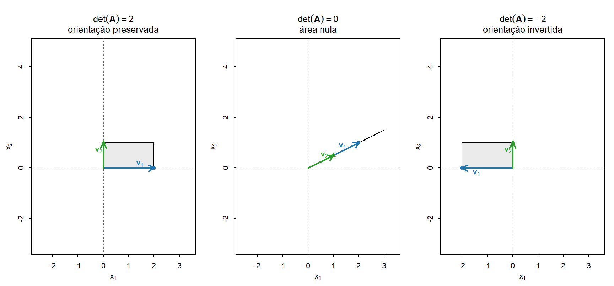
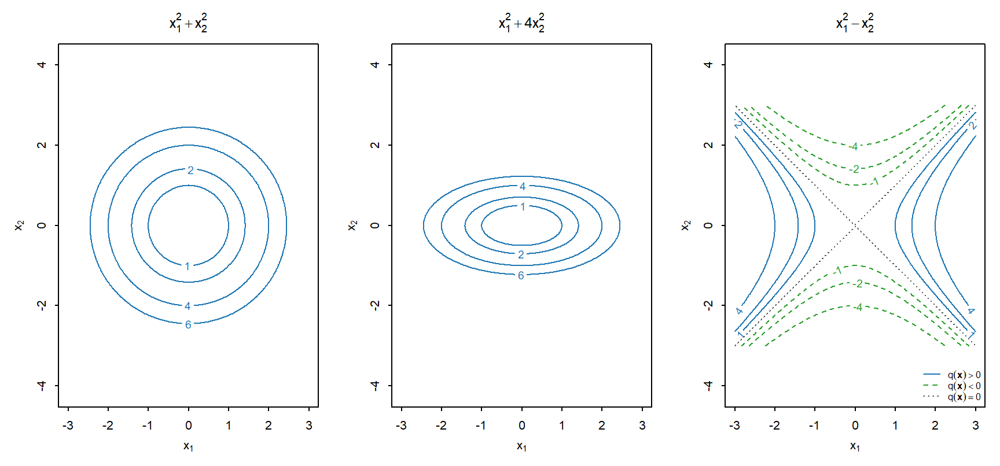

2 Álgebra matricial aplicada
No capítulo anterior, vetores foram apresentados nas formas coluna e linha, e a matriz de dados foi construída a partir da organização conjunta das observações e das variáveis. O produto externo mostrou ainda como dois vetores podem gerar uma matriz. Essas representações estabelecem a passagem natural da linguagem vetorial para a linguagem matricial.
Este capítulo desenvolve as operações e propriedades necessárias para manipular matrizes. O produto matriz-vetor e o produto entre matrizes permitem combinar linhas e colunas de dimensões compatíveis, enquanto a transposição, a simetria e o traço descrevem propriedades estruturais importantes dessas operações. Nesse contexto, o produto externo será retomado como um caso particular do produto matricial.
Também serão estudadas a identidade, a inversa, o determinante, o posto e sua relação com sistemas lineares, além de classes particulares de matrizes e de formas bilineares e quadráticas. As seções finais introduzem matrizes particionadas e complemento de Schur, preparando estruturas que serão utilizadas posteriormente na formulação de resultados multivariados.
2.1 Operações matriciais fundamentais
As dimensões das matrizes determinam quais operações podem ser realizadas. A igualdade, a soma, a subtração e a multiplicação por escalar atuam sobre elementos correspondentes. O produto matricial combina linhas da primeira matriz com colunas da segunda.
Definição 2.1 (Igualdade entre matrizes) Sejam \(\mathbf{A}=(a_{ij})_{n\times p}\) e \(\mathbf{B}=(b_{ij})_{r\times s}\). As matrizes \(\mathbf{A}\) e \(\mathbf{B}\) são iguais quando possuem as mesmas dimensões e elementos correspondentes iguais:
\[ \mathbf{A} = \mathbf{B} \quad\Longleftrightarrow\quad n=r,\quad p=s \quad\text{e}\quad a_{ij}=b_{ij} \]
para \(i=1,\ldots,n\) e \(j=1,\ldots,p\).
Assim,
\[ \begin{bmatrix} 1 & 2\\ 3 & 4 \end{bmatrix} = \begin{bmatrix} 1 & 2\\ 3 & 4 \end{bmatrix}, \]
mas
\[ \begin{bmatrix} 1 & 2\\ 3 & 4 \end{bmatrix} \neq \begin{bmatrix} 1 & 2\\ 4 & 3 \end{bmatrix}. \]
A posição de cada elemento faz parte da estrutura da matriz.
2.1.1 Soma e subtração de matrizes
Definição 2.2 (Soma e subtração de matrizes) Sejam \(\mathbf{A}=(a_{ij})_{n\times p}\) e \(\mathbf{B}=(b_{ij})_{n\times p}\). A soma e a subtração são definidas por
\[ \mathbf{A}+\mathbf{B} = (a_{ij}+b_{ij})_{n\times p} \]
e
\[ \mathbf{A}-\mathbf{B} = (a_{ij}-b_{ij})_{n\times p}. \]
As duas operações exigem que as matrizes possuam as mesmas dimensões.
Exemplo 2.1 (Soma e subtração de matrizes) Considere
\[ \mathbf{A} = \begin{bmatrix} 1 & 2\\ -1 & 3 \end{bmatrix}, \qquad \mathbf{B} = \begin{bmatrix} 4 & -2\\ 2 & 1 \end{bmatrix}. \]
A soma é
\[ \mathbf{A}+\mathbf{B} = \begin{bmatrix} 1+4 & 2+(-2)\\ -1+2 & 3+1 \end{bmatrix} = \begin{bmatrix} 5 & 0\\ 1 & 4 \end{bmatrix}. \]
A subtração é
\[ \mathbf{A}-\mathbf{B} = \begin{bmatrix} 1-4 & 2-(-2)\\ -1-2 & 3-1 \end{bmatrix} = \begin{bmatrix} -3 & 4\\ -3 & 2 \end{bmatrix}. \]
Proposição 2.1 (Propriedades da adição matricial) Sejam
\[ \mathbf{A},\mathbf{B},\mathbf{C} \in \mathbb{R}^{n\times p}. \]
A adição de matrizes satisfaz as seguintes propriedades:
Comutatividade
\[ \mathbf{A}+\mathbf{B} = \mathbf{B}+\mathbf{A}. \]
Associatividade
\[ (\mathbf{A}+\mathbf{B})+\mathbf{C} = \mathbf{A}+(\mathbf{B}+\mathbf{C}). \]
Existência do elemento neutro
\[ \mathbf{A}+\mathbf{0}_{n\times p} = \mathbf{A}, \]
em que \(\mathbf{0}_{n\times p}\) é o elemento neutro de dimensão \(n \times p\):
\[ \mathbf{0}_{n\times p} = \begin{bmatrix} 0 & \cdots & 0\\ \vdots & \ddots & \vdots\\ 0 & \cdots & 0 \end{bmatrix}. \]
Existência do elemento oposto
\[ \mathbf{A}+(-\mathbf{A}) = \mathbf{0}_{n\times p}. \]
Definição 2.3 (Multiplicação de matriz por escalar) Seja \(\mathbf{A}=(a_{ij})_{n\times p}\) e seja \(\alpha\in\mathbb{R}\). A multiplicação de \(\mathbf{A}\) por \(\alpha\) é definida por
\[ \alpha\mathbf{A} = (\alpha a_{ij})_{n\times p}. \]
Cada elemento da matriz é multiplicado pelo mesmo escalar.
Exemplo 2.2 (Multiplicação de matriz por escalar) Para
\[ \mathbf{A} = \begin{bmatrix} 1 & 2\\ -1 & 3 \end{bmatrix} \]
e \(\alpha=-2\), tem-se
\[ -2\mathbf{A} = -2 \begin{bmatrix} 1 & 2\\ -1 & 3 \end{bmatrix} = \begin{bmatrix} -2 & -4\\ 2 & -6 \end{bmatrix}. \]
Proposição 2.2 (Propriedades da multiplicação por escalar) Sejam \(\mathbf{A},\mathbf{B}\in\mathbb{R}^{n\times p}\) e \(\alpha,\beta\in\mathbb{R}\). A multiplicação de uma matriz por um escalar satisfaz as seguintes propriedades:
Distributividade em relação à adição de matrizes
\[ \alpha(\mathbf{A}+\mathbf{B}) = \alpha\mathbf{A} + \alpha\mathbf{B}. \]
Distributividade em relação à adição de escalares
\[ (\alpha+\beta)\mathbf{A} = \alpha\mathbf{A} + \beta\mathbf{A}. \]
Associatividade da multiplicação por escalares
\[ \alpha(\beta\mathbf{A}) = (\alpha\beta)\mathbf{A}. \]
Elemento neutro da multiplicação escalar
\[ 1\mathbf{A} = \mathbf{A}. \]
A adição de matrizes e a multiplicação por escalar preservam as dimensões das matrizes envolvidas. O produto matricial, apresentado a seguir, utiliza uma regra diferente e pode produzir uma matriz com dimensões distintas das matrizes multiplicadas.
2.1.2 Produto matriz-vetor
O produto de uma matriz por um vetor é definido quando o número de colunas da matriz coincide com o número de componentes do vetor.
Para
\[ \mathbf{A}\in\mathbb{R}^{n\times p} \qquad \text{e} \qquad \mathbf{x}\in\mathbb{R}^p, \]
cada linha de \(\mathbf{A}\) pode ser associada a um produto interno com \(\mathbf{x}\). A definição a seguir reúne esses produtos internos em um vetor de \(\mathbb{R}^n\).
Definição 2.4 (Produto matriz-vetor) Sejam
\[ \mathbf{A} = \begin{bmatrix} \mathbf{a}_1^{\top}\\ \mathbf{a}_2^{\top}\\ \vdots\\ \mathbf{a}_n^{\top} \end{bmatrix} \in \mathbb{R}^{n\times p} \]
e
\[ \mathbf{x} \in \mathbb{R}^p. \]
O produto de \(\mathbf{A}\) por \(\mathbf{x}\) é o vetor
\[ \mathbf{A}\mathbf{x} = \begin{bmatrix} \langle\mathbf{a}_1,\mathbf{x}\rangle\\ \langle\mathbf{a}_2,\mathbf{x}\rangle\\ \vdots\\ \langle\mathbf{a}_n,\mathbf{x}\rangle \end{bmatrix} \in \mathbb{R}^n. \]
Escrevendo
\[ \mathbf{A} = (a_{ij})_{n\times p} \]
e
\[ \mathbf{x} = \begin{bmatrix} x_1\\ x_2\\ \vdots\\ x_p \end{bmatrix}, \]
cada produto interno pode ser escrito como
\[ \langle\mathbf{a}_i,\mathbf{x}\rangle = \sum_{j=1}^{p} a_{ij}x_j. \]
Portanto,
\[ \mathbf{A}\mathbf{x} = \begin{bmatrix} \displaystyle\sum_{j=1}^{p}a_{1j}x_j\\[4pt] \displaystyle\sum_{j=1}^{p}a_{2j}x_j\\ \vdots\\ \displaystyle\sum_{j=1}^{p}a_{nj}x_j \end{bmatrix}. \]
A componente \(i\) do vetor resultante é, portanto,
\[ (\mathbf{A}\mathbf{x})_i = \mathbf{a}_i^{\top}\mathbf{x} = \langle\mathbf{a}_i,\mathbf{x}\rangle = \sum_{j=1}^{p}a_{ij}x_j. \]
O mesmo produto admite outra interpretação. Escrevendo \(\mathbf{A}\) por suas colunas,
\[ \mathbf{A} = \left[ \mathbf{a}_{\cdot1} \; \mathbf{a}_{\cdot2} \; \cdots \; \mathbf{a}_{\cdot p} \right], \]
tem-se
\[ \mathbf{A}\mathbf{x} = x_1\mathbf{a}_{\cdot1} + x_2\mathbf{a}_{\cdot2} + \cdots + x_p\mathbf{a}_{\cdot p}. \]
Assim, o produto matriz-vetor possui duas interpretações complementares:
- pelas linhas, cada componente de \(\mathbf{A}\mathbf{x}\) é um produto interno entre o vetor associado a uma linha de \(\mathbf{A}\) e \(\mathbf{x}\);
- pelas colunas, \(\mathbf{A}\mathbf{x}\) é uma combinação linear das colunas de \(\mathbf{A}\), com coeficientes dados pelas componentes de \(\mathbf{x}\).
Exemplo 2.3 (Produto de uma matriz por um vetor) Considere
\[ \mathbf{A} = \begin{bmatrix} 1 & 2\\ -1 & 3\\ 2 & 0 \end{bmatrix} \in \mathbb{R}^{3\times2} \]
e
\[ \mathbf{x} = \begin{bmatrix} 2\\ -1 \end{bmatrix} \in \mathbb{R}^2. \]
Pelas linhas de \(\mathbf{A}\),
\[ \mathbf{A}\mathbf{x} = \begin{bmatrix} (1)(2)+(2)(-1)\\ (-1)(2)+(3)(-1)\\ (2)(2)+(0)(-1) \end{bmatrix} = \begin{bmatrix} 0\\ -5\\ 4 \end{bmatrix}. \]
Cada componente é um produto interno entre \(\mathbf{x}\) e uma linha de \(\mathbf{A}\).
Pelas colunas,
\[ \mathbf{a}_{\cdot1} = \begin{bmatrix} 1\\ -1\\ 2 \end{bmatrix}, \qquad \mathbf{a}_{\cdot2} = \begin{bmatrix} 2\\ 3\\ 0 \end{bmatrix}. \]
Logo,
\[ \begin{aligned} \mathbf{A}\mathbf{x} &= 2\mathbf{a}_{\cdot1} - \mathbf{a}_{\cdot2}\\ &= 2 \begin{bmatrix} 1\\ -1\\ 2 \end{bmatrix} - \begin{bmatrix} 2\\ 3\\ 0 \end{bmatrix}\\ &= \begin{bmatrix} 0\\ -5\\ 4 \end{bmatrix}. \end{aligned} \]
As duas formas de cálculo produzem o mesmo vetor: pelas linhas, o resultado é obtido por produtos internos; pelas colunas, por uma combinação linear.
2.1.3 Produto entre matrizes
O produto entre matrizes estende o produto matriz-vetor. Se as colunas de uma matriz \(\mathbf{B}\) são
\[ \mathbf{b}_{\cdot1}, \mathbf{b}_{\cdot2}, \ldots, \mathbf{b}_{\cdot r}, \]
então multiplicar \(\mathbf{A}\) por \(\mathbf{B}\) equivale a multiplicar \(\mathbf{A}\) por cada uma dessas colunas:
\[ \mathbf{A}\mathbf{B} = \mathbf{A} \left[ \mathbf{b}_{\cdot1} \; \mathbf{b}_{\cdot2} \; \cdots \; \mathbf{b}_{\cdot r} \right] = \left[ \mathbf{A}\mathbf{b}_{\cdot1} \; \mathbf{A}\mathbf{b}_{\cdot2} \; \cdots \; \mathbf{A}\mathbf{b}_{\cdot r} \right]. \]
Como cada componente de \(\mathbf{A}\mathbf{b}_{\cdot j}\) é um produto interno entre uma linha de \(\mathbf{A}\) e a coluna \(\mathbf{b}_{\cdot j}\), cada elemento do produto matricial também pode ser interpretado como um produto interno.
Definição 2.5 (Produto entre matrizes) Sejam
\[ \mathbf{A} = \begin{bmatrix} \mathbf{a}_1^{\top}\\ \mathbf{a}_2^{\top}\\ \vdots\\ \mathbf{a}_n^{\top} \end{bmatrix} \in \mathbb{R}^{n\times p} \]
e
\[ \mathbf{B} = \left[ \mathbf{b}_{\cdot1} \; \mathbf{b}_{\cdot2} \; \cdots \; \mathbf{b}_{\cdot r} \right] \in \mathbb{R}^{p\times r}. \]
O produto de \(\mathbf{A}\) por \(\mathbf{B}\) é a seguinte matriz em \(\mathbb{R}^{n\times r}\)
\[ \mathbf{A}\mathbf{B} = \begin{bmatrix} \mathbf{a}_1^{\top}\mathbf{b}_{\cdot1} & \mathbf{a}_1^{\top}\mathbf{b}_{\cdot2} & \cdots & \mathbf{a}_1^{\top}\mathbf{b}_{\cdot r} \\ \mathbf{a}_2^{\top}\mathbf{b}_{\cdot1} & \mathbf{a}_2^{\top}\mathbf{b}_{\cdot2} & \cdots & \mathbf{a}_2^{\top}\mathbf{b}_{\cdot r} \\ \vdots & \vdots & \ddots & \vdots \\ \mathbf{a}_n^{\top}\mathbf{b}_{\cdot1} & \mathbf{a}_n^{\top}\mathbf{b}_{\cdot2} & \cdots & \mathbf{a}_n^{\top}\mathbf{b}_{\cdot r} \end{bmatrix}. \]
Portanto, o elemento localizado na linha \(i\) e na coluna \(j\) do produto é
\[ (\mathbf{A}\mathbf{B})_{ij} = \mathbf{a}_i^{\top}\mathbf{b}_{\cdot j} = \left\langle \mathbf{a}_i, \mathbf{b}_{\cdot j} \right\rangle. \]
Escrevendo
\[ \mathbf{A} = (a_{ik})_{n\times p} \]
e
\[ \mathbf{B} = (b_{kj})_{p\times r}, \]
o mesmo elemento pode ser expresso como
\[ (\mathbf{A}\mathbf{B})_{ij} = \sum_{k=1}^{p} a_{ik}b_{kj}, \]
para
\[ i=1,\ldots,n \qquad \text{e} \qquad j=1,\ldots,r. \]
Assim, o produto matricial admite duas leituras complementares:
- pelos elementos, cada entrada de \(\mathbf{A}\mathbf{B}\) é o produto interno entre uma linha de \(\mathbf{A}\) e uma coluna de \(\mathbf{B}\);
- pelas colunas, cada coluna de \(\mathbf{A}\mathbf{B}\) é obtida multiplicando \(\mathbf{A}\) pela coluna correspondente de \(\mathbf{B}\).
Exemplo 2.4 (Produto entre duas matrizes) Considere
\[ \mathbf{A} = \begin{bmatrix} 1 & 2 & 0\\ -1 & 3 & 1 \end{bmatrix} \in \mathbb{R}^{2\times3} \]
e
\[ \mathbf{B} = \begin{bmatrix} 2 & 1\\ 0 & -1\\ 4 & 2 \end{bmatrix} \in \mathbb{R}^{3\times2}. \]
Como o número de colunas de \(\mathbf{A}\) coincide com o número de linhas de \(\mathbf{B}\), o produto está definido e possui dimensão \(2\times2\).
Cada elemento é obtido pelo produto interno entre uma linha de \(\mathbf{A}\) e uma coluna de \(\mathbf{B}\). Por exemplo,
\[ (\mathbf{A}\mathbf{B})_{11} = \begin{bmatrix} 1 & 2 & 0 \end{bmatrix} \begin{bmatrix} 2\\ 0\\ 4 \end{bmatrix}\\ = (1)(2)+(2)(0)+(0)(4) = 2, \]
enquanto
\[ (\mathbf{A}\mathbf{B})_{12} = \begin{bmatrix} 1 & 2 & 0 \end{bmatrix} \begin{bmatrix} 1\\ -1\\ 2 \end{bmatrix}\\ = (1)(1)+(2)(-1)+(0)(2) = -1. \]
Procedendo da mesma forma para os demais elementos,
\[ \mathbf{A}\mathbf{B} = \begin{bmatrix} 2 & -1\\ 2 & -2 \end{bmatrix}. \]
NotaProduto interno e produto externo como produtos matriciais
As operações entre vetores apresentadas anteriormente também podem ser expressas por meio do produto matricial.
Para \(\mathbf{x},\mathbf{y}\in\mathbb{R}^p\), o produto interno pode ser escrito como
\[ \langle \mathbf{x}, \mathbf{y} \rangle = \mathbf{x}^{\top}\mathbf{y}. \]
Como
\[ \mathbf{x}^{\top}\in\mathbb{R}^{1\times p} \qquad\text{e}\qquad \mathbf{y}\in\mathbb{R}^{p\times1}, \]
o produto possui dimensão \(1\times1\) e corresponde a um escalar:
\[ \mathbf{x}^{\top}\mathbf{y} = x_1y_1+x_2y_2+\cdots+x_py_p. \]
De forma semelhante, para
\[ \mathbf{x}\in\mathbb{R}^p \qquad\text{e}\qquad \mathbf{y}\in\mathbb{R}^q, \]
o produto externo, anteriormente denotado por
\[ \operatorname{ext}(\mathbf{x},\mathbf{y}), \]
pode ser escrito como
\[ \operatorname{ext}(\mathbf{x},\mathbf{y}) = \mathbf{x}\mathbf{y}^{\top}. \]
Nesse caso,
\[ \mathbf{x}\in\mathbb{R}^{p\times1} \qquad\text{e}\qquad \mathbf{y}^{\top}\in\mathbb{R}^{1\times q}, \]
de modo que
\[ \mathbf{x}\mathbf{y}^{\top} \in \mathbb{R}^{p\times q}. \]
Portanto, a ordem e a orientação dos vetores determinam objetos diferentes:
\[ \mathbf{x}^{\top}\mathbf{y} \text{ é um escalar} \]
enquanto
\[ \mathbf{x}\mathbf{y}^{\top} \text{ é uma matriz}. \]
Exemplo 2.5 (Produtos envolvendo uma matriz de dados) Considere a matriz de dados
\[ \mathbf{X} = \begin{bmatrix} 2 & 1 & 4\\ 3 & 5 & 2\\ 6 & 2 & 1\\ 4 & 3 & 5 \end{bmatrix} \in \mathbb{R}^{4\times3}. \]
As quatro linhas correspondem às observações, e as três colunas correspondem às variáveis.
A matriz
\[ \mathbf{X}^{\top} = \begin{bmatrix} 2 & 3 & 6 & 4\\ 1 & 5 & 2 & 3\\ 4 & 2 & 1 & 5 \end{bmatrix} \in \mathbb{R}^{3\times4} \]
é obtida escrevendo as colunas de \(\mathbf{X}\) como linhas. A operação de transposição e suas propriedades serão formalizadas adiante.
Considere ainda
\[ \mathbf{a} = \begin{bmatrix} 1\\ 2\\ -1 \end{bmatrix}. \]
O produto
\[ \mathbf{X}\mathbf{a} = \begin{bmatrix} 0\\ 11\\ 9\\ 5 \end{bmatrix} \]
pode ser escrito, em termos das colunas de \(\mathbf{X}\), como
\[ \mathbf{X}\mathbf{a} = \mathbf{x}_{\cdot1} + 2\mathbf{x}_{\cdot2} - \mathbf{x}_{\cdot3}. \]
Portanto, o vetor resultante contém os valores da nova variável formada pela combinação linear
\[ X_1+2X_2-X_3. \]
Considere agora o produto
\[ \mathbf{X}^{\top}\mathbf{X} = \begin{bmatrix} 65 & 41 & 40\\ 41 & 39 & 31\\ 40 & 31 & 46 \end{bmatrix}. \]
Esse produto possui dimensão \(3\times3\). Cada elemento é o produto interno entre duas colunas de \(\mathbf{X}\) e, portanto, relaciona duas variáveis. Em geral,
\[ \left( \mathbf{X}^{\top}\mathbf{X} \right)_{jk} = \left\langle \mathbf{x}_{\cdot j}, \mathbf{x}_{\cdot k} \right\rangle. \]
Por exemplo,
\[ \left( \mathbf{X}^{\top}\mathbf{X} \right)_{12} = \left\langle \mathbf{x}_{\cdot1}, \mathbf{x}_{\cdot2} \right\rangle = 41. \]
Por outro lado,
\[ \mathbf{X}\mathbf{X}^{\top} = \begin{bmatrix} 21 & 19 & 18 & 31\\ 19 & 38 & 30 & 37\\ 18 & 30 & 41 & 35\\ 31 & 37 & 35 & 50 \end{bmatrix} \]
possui dimensão \(4\times4\). Cada elemento é o produto interno entre duas linhas de \(\mathbf{X}\) e, portanto, relaciona duas observações. Em geral,
\[ \left( \mathbf{X}\mathbf{X}^{\top} \right)_{ih} = \left\langle \mathbf{x}_i, \mathbf{x}_h \right\rangle. \]
Por exemplo,
\[ \left( \mathbf{X}\mathbf{X}^{\top} \right)_{12} = \left\langle \mathbf{x}_1, \mathbf{x}_2 \right\rangle = 19. \]
Assim, a mesma matriz de dados gera dois produtos com interpretações distintas:
- \(\mathbf{X}^{\top}\mathbf{X}\) relaciona as variáveis;
- \(\mathbf{X}\mathbf{X}^{\top}\) relaciona as observações.
Esses produtos serão retomados no estudo de matrizes de Gram, produtos cruzados, covariâncias e decomposição em valores singulares.
2.1.4 Propriedades do produto matricial
Proposição 2.3 (Propriedades do produto matricial) Para matrizes com dimensões compatíveis, o produto matricial satisfaz as seguintes propriedades:
Associatividade
\[ (\mathbf{A}\mathbf{B})\mathbf{C} = \mathbf{A}(\mathbf{B}\mathbf{C}). \]
Distributividade à esquerda
\[ \mathbf{A}(\mathbf{B}+\mathbf{C}) = \mathbf{A}\mathbf{B} + \mathbf{A}\mathbf{C}. \]
Distributividade à direita
\[ (\mathbf{A}+\mathbf{B})\mathbf{C} = \mathbf{A}\mathbf{C} + \mathbf{B}\mathbf{C}. \]
Compatibilidade com a multiplicação por escalar
Para \(\alpha\in\mathbb{R}\),
\[ (\alpha\mathbf{A})\mathbf{B} = \alpha(\mathbf{A}\mathbf{B}) = \mathbf{A}(\alpha\mathbf{B}). \]
O produto matricial, em geral, não é comutativo. Mesmo quando \(\mathbf{A}\mathbf{B}\) e \(\mathbf{B}\mathbf{A}\) estão ambos definidos e possuem a mesma dimensão, pode ocorrer
\[ \mathbf{A}\mathbf{B} \neq \mathbf{B}\mathbf{A}. \]
Exemplo 2.6 (Não comutatividade do produto matricial) Considere
\[ \mathbf{A} = \begin{bmatrix} 1 & 1\\ 0 & 1 \end{bmatrix} \]
e
\[ \mathbf{B} = \begin{bmatrix} 1 & 0\\ 1 & 1 \end{bmatrix}. \]
Tem-se
\[ \mathbf{A}\mathbf{B} = \begin{bmatrix} 2 & 1\\ 1 & 1 \end{bmatrix}, \]
enquanto
\[ \mathbf{B}\mathbf{A} = \begin{bmatrix} 1 & 1\\ 1 & 2 \end{bmatrix}. \]
Portanto,
\[ \mathbf{A}\mathbf{B} \neq \mathbf{B}\mathbf{A}. \]
2.2 Transposição, simetria e traço
A transposição troca as linhas de uma matriz por suas colunas. Essa operação permite reorganizar produtos matriciais e definir matrizes simétricas.
2.2.1 Transposição
Definição 2.6 (Matriz transposta) Seja \(\mathbf{A}=(a_{ij})_{n\times p}\in\mathbb{R}^{n\times p}\). A transposta de \(\mathbf{A}\) é a matriz
\[ \mathbf{A}^{\top} = (a_{ji})_{p\times n} \in \mathbb{R}^{p\times n}. \]
O elemento que ocupa a linha \(i\) e a coluna \(j\) de \(\mathbf{A}\) passa a ocupar a linha \(j\) e a coluna \(i\) de \(\mathbf{A}^{\top}\).
Exemplo 2.7 (Transposição de uma matriz) Considere
\[ \mathbf{A} = \begin{bmatrix} 1 & 2 & 3\\ 4 & 5 & 6 \end{bmatrix} \in \mathbb{R}^{2\times3}. \]
Sua transposta é
\[ \mathbf{A}^{\top} = \begin{bmatrix} 1 & 4\\ 2 & 5\\ 3 & 6 \end{bmatrix} \in \mathbb{R}^{3\times2}. \]
Para uma matriz de dados
\[ \mathbf{X} \in \mathbb{R}^{n\times p}, \]
a transposta possui dimensão
\[ \mathbf{X}^{\top} \in \mathbb{R}^{p\times n}. \]
As linhas de \(\mathbf{X}\) tornam-se as colunas de \(\mathbf{X}^{\top}\), e as colunas de \(\mathbf{X}\) tornam-se suas linhas.
Proposição 2.4 (Propriedades da transposição) Sejam \(\mathbf{A}\) e \(\mathbf{B}\) matrizes com dimensões compatíveis e seja \(\alpha\in\mathbb{R}\). Então,
\(\left(\mathbf{A}^{\top}\right)^{\top}=\mathbf{A}\),
\(\left(\mathbf{A}+\mathbf{B}\right)^{\top}=\mathbf{A}^{\top}+\mathbf{B}^{\top}\),
\(\left(\alpha\mathbf{A}\right)^{\top}=\alpha\mathbf{A}^{\top}\) e
\(\left(\mathbf{A}\mathbf{B}\right)^{\top}=\mathbf{B}^{\top}\mathbf{A}^{\top}\).
Em particular, para vetores \(\mathbf{x}\in\mathbb{R}^p\) e \(\mathbf{y}\in\mathbb{R}^q\), \(\left( \mathbf{x}\mathbf{y}^{\top}\right)^{\top}=\mathbf{y}\mathbf{x}^{\top}\).
A última propriedade mostra que a transposição de um produto inverte a ordem dos fatores. Em particular, ela será útil para reconhecer estruturas simétricas construídas a partir de produtos externos.
Exemplo 2.8 (Transposta de um produto) Considere
\[ \mathbf{A} = \begin{bmatrix} 1 & 2\\ 0 & 1 \end{bmatrix} \]
e
\[ \mathbf{B} = \begin{bmatrix} 3 & 1\\ 2 & 4 \end{bmatrix}. \]
O produto é
\[ \mathbf{A}\mathbf{B} = \begin{bmatrix} 7 & 9\\ 2 & 4 \end{bmatrix}, \]
de modo que
\[ (\mathbf{A}\mathbf{B})^{\top} = \begin{bmatrix} 7 & 2\\ 9 & 4 \end{bmatrix}. \]
Por outro lado,
\[ \mathbf{B}^{\top}\mathbf{A}^{\top} = \begin{bmatrix} 3 & 2\\ 1 & 4 \end{bmatrix} \begin{bmatrix} 1 & 0\\ 2 & 1 \end{bmatrix} = \begin{bmatrix} 7 & 2\\ 9 & 4 \end{bmatrix}. \]
Portanto,
\[ (\mathbf{A}\mathbf{B})^{\top} = \mathbf{B}^{\top}\mathbf{A}^{\top}. \]
2.2.2 Matrizes simétricas
A simetria compara uma matriz quadrada com sua transposta.
Definição 2.7 (Matriz simétrica) Uma matriz \(\mathbf{A}\in\mathbb{R}^{n\times n}\) é simétrica quando
\[ \mathbf{A}^{\top} = \mathbf{A}. \]
Em termos dos elementos,
\[ a_{ij} = a_{ji}, \qquad i,j=1,\ldots,n. \]
Em uma matriz simétrica, os elementos situados em posições opostas em relação à diagonal principal são iguais.
Exemplo 2.9 (Matriz simétrica) A matriz
\[ \mathbf{A} = \begin{bmatrix} 2 & 1 & -3\\ 1 & 4 & 2\\ -3 & 2 & 5 \end{bmatrix} \]
é simétrica, pois
\[ \mathbf{A}^{\top} = \begin{bmatrix} 2 & 1 & -3\\ 1 & 4 & 2\\ -3 & 2 & 5 \end{bmatrix} = \mathbf{A}. \]
A soma de matrizes simétricas de mesma dimensão é simétrica. Se \(\mathbf{A}\) é simétrica e \(\alpha\in\mathbb{R}\), então \(\alpha\mathbf{A}\) também é simétrica.
Um caso particularmente importante é obtido pelo produto externo de um vetor consigo mesmo. Para \(\mathbf{x}\in\mathbb{R}^p\), tem-se
\[ \left( \mathbf{x}\mathbf{x}^{\top} \right)^{\top} = \mathbf{x}\mathbf{x}^{\top}. \]
Portanto,
\[ \mathbf{x}\mathbf{x}^{\top} \]
é uma matriz simétrica.
O produto de duas matrizes simétricas não é necessariamente simétrico. Para matrizes simétricas \(\mathbf{A}\) e \(\mathbf{B}\),
\[ (\mathbf{A}\mathbf{B})^{\top} = \mathbf{B}\mathbf{A}. \]
Portanto, \(\mathbf{A}\mathbf{B}\) é simétrica quando
\[ \mathbf{A}\mathbf{B} = \mathbf{B}\mathbf{A}. \]
Definição 2.8 (Matriz antissimétrica) Uma matriz \(\mathbf{A}\in\mathbb{R}^{n\times n}\) é antissimétrica quando
\[ \mathbf{A}^{\top} = -\mathbf{A}. \]
Os elementos da diagonal principal de uma matriz antissimétrica são iguais a zero. De fato,
\[ a_{ii} = -a_{ii} \]
implica
\[ a_{ii}=0. \]
Uma matriz antissimétrica possui a forma
\[ \mathbf{A} = \begin{bmatrix} 0 & a_{12} & \cdots & a_{1n}\\ -a_{12} & 0 & \cdots & a_{2n}\\ \vdots & \vdots & \ddots & \vdots\\ -a_{1n} & -a_{2n} & \cdots & 0 \end{bmatrix}. \]
Teorema 2.1 (Decomposição em partes simétrica e antissimétrica) Toda matriz quadrada \(\mathbf{A}\in\mathbb{R}^{n\times n}\) pode ser escrita de maneira única como
\[ \mathbf{A} = \mathbf{S} + \mathbf{K}, \]
em que
\[ \mathbf{S} = \frac{ \mathbf{A} + \mathbf{A}^{\top} }{2} \]
é simétrica e
\[ \mathbf{K} = \frac{ \mathbf{A} - \mathbf{A}^{\top} }{2} \]
é antissimétrica. (Horn; Johnson, 2013)
Comprovação. A transposta de \(\mathbf{S}\) é
\[ \mathbf{S}^{\top} = \left( \frac{ \mathbf{A} + \mathbf{A}^{\top} }{2} \right)^{\top} = \frac{ \mathbf{A}^{\top} + \mathbf{A} }{2} = \mathbf{S}. \]
Logo, \(\mathbf{S}\) é simétrica.
Para \(\mathbf{K}\),
\[ \mathbf{K}^{\top} = \left( \frac{ \mathbf{A} - \mathbf{A}^{\top} }{2} \right)^{\top} = \frac{ \mathbf{A}^{\top} - \mathbf{A} }{2} = -\mathbf{K}. \]
Logo, \(\mathbf{K}\) é antissimétrica. Além disso,
\[ \mathbf{S}+\mathbf{K} = \frac{ \mathbf{A} + \mathbf{A}^{\top} }{2} + \frac{ \mathbf{A} - \mathbf{A}^{\top} }{2} = \mathbf{A}. \]
Para verificar a unicidade, suponha que
\[ \mathbf{A} = \mathbf{S}_1+\mathbf{K}_1, \]
em que \(\mathbf{S}_1\) é simétrica e \(\mathbf{K}_1\) é antissimétrica. Transpondo essa igualdade,
\[ \mathbf{A}^{\top} = \mathbf{S}_1-\mathbf{K}_1. \]
Somando e subtraindo as duas expressões, obtém-se
\[ \mathbf{S}_1 = \frac{ \mathbf{A}+\mathbf{A}^{\top} }{2} \]
e
\[ \mathbf{K}_1 = \frac{ \mathbf{A}-\mathbf{A}^{\top} }{2}. \]
Portanto, as partes simétrica e antissimétrica são únicas.
Exemplo 2.10 (Partes simétrica e antissimétrica) Considere
\[ \mathbf{A} = \begin{bmatrix} 1 & 4\\ -2 & 3 \end{bmatrix}. \]
A parte simétrica é
\[ \mathbf{S} = \frac{ \mathbf{A} + \mathbf{A}^{\top} }{2} = \frac{1}{2} \left( \begin{bmatrix} 1 & 4\\ -2 & 3 \end{bmatrix} + \begin{bmatrix} 1 & -2\\ 4 & 3 \end{bmatrix} \right)\\ = \begin{bmatrix} 1 & 1\\ 1 & 3 \end{bmatrix}. \]
A parte antissimétrica é
\[ \mathbf{K} = \frac{ \mathbf{A} - \mathbf{A}^{\top} }{2} = \frac{1}{2} \left( \begin{bmatrix} 1 & 4\\ -2 & 3 \end{bmatrix} - \begin{bmatrix} 1 & -2\\ 4 & 3 \end{bmatrix} \right)\\ = \begin{bmatrix} 0 & 3\\ -3 & 0 \end{bmatrix}. \]
Portanto,
\[ \mathbf{A} = \begin{bmatrix} 1 & 1\\ 1 & 3 \end{bmatrix} + \begin{bmatrix} 0 & 3\\ -3 & 0 \end{bmatrix}. \]
As matrizes de covariâncias também pertencem à classe das matrizes simétricas.
2.2.3 Traço
O traço reúne os elementos da diagonal principal de uma matriz quadrada. Apesar de sua definição simples, essa operação permite representar de forma compacta somas de quadrados, produtos internos, formas quadráticas e diversas expressões matriciais utilizadas em Estatística Multivariada.
Definição 2.9 (Traço de uma matriz) Seja \(\mathbf{A}=(a_{ij})_{n\times n}\in\mathbb{R}^{n\times n}\). O traço de \(\mathbf{A}\) é definido por
\[ \operatorname{tr}(\mathbf{A}) = \sum_{i=1}^{n}a_{ii}. \]
Exemplo 2.11 (Cálculo do traço) Para \(\mathbf{A}=\begin{bmatrix}2 & 1 & 0\\-1 & 4 & 3\\2 & 5 & -3\end{bmatrix}\), tem-se
\[ \operatorname{tr}(\mathbf{A}) = 2+4-3 = 3. \]
Proposição 2.5 (Propriedades básicas do traço) Sejam \(\mathbf{A},\mathbf{B}\in\mathbb{R}^{n\times n}\) e \(\alpha,\beta\in\mathbb{R}\). Então,
Linearidade:
\[ \operatorname{tr} \left( \alpha\mathbf{A} + \beta\mathbf{B} \right) = \alpha\operatorname{tr}(\mathbf{A}) + \beta\operatorname{tr}(\mathbf{B}). \]
Invariância à transposição:
\[ \operatorname{tr} \left( \mathbf{A}^{\top} \right) = \operatorname{tr}(\mathbf{A}). \]
Traço da matriz identidade:
\[ \operatorname{tr}(\mathbf{I}_n) = n. \]
Consequentemente,
\[ \operatorname{tr}(\alpha\mathbf{I}_n) = \alpha n. \]
Propriedade cíclica: se \(\mathbf{C}\in\mathbb{R}^{n\times p}\) e \(\mathbf{D}\in\mathbb{R}^{p\times n}\), então
\[ \operatorname{tr}(\mathbf{C}\mathbf{D}) = \operatorname{tr}(\mathbf{D}\mathbf{C}). \]
A primeira propriedade mostra que o traço é uma operação linear. A segunda decorre do fato de que a transposição não modifica os elementos da diagonal principal. A quarta permite reorganizar produtos matriciais dentro do traço, desde que seja preservada a ordem cíclica dos fatores.
A propriedade cíclica pode ser demonstrada diretamente a partir da definição do produto matricial.
Comprovação. Como \(\mathbf{C}\in\mathbb{R}^{n\times p}\) e \(\mathbf{D}\in\mathbb{R}^{p\times n}\),
\[ \operatorname{tr}(\mathbf{C}\mathbf{D}) = \sum_{i=1}^{n} (\mathbf{C}\mathbf{D})_{ii} = \sum_{i=1}^{n} \sum_{j=1}^{p} c_{ij}d_{ji}. \]
Trocando a ordem das somas,
\[ \sum_{i=1}^{n} \sum_{j=1}^{p} c_{ij}d_{ji} = \sum_{j=1}^{p} \sum_{i=1}^{n} d_{ji}c_{ij} = \operatorname{tr}(\mathbf{D}\mathbf{C}). \]
Proposição 2.6 (Ciclicidade para vários fatores) Para matrizes com dimensões compatíveis, os fatores de um produto podem ser deslocados ciclicamente dentro do traço. Por exemplo,
\[ \operatorname{tr} \left( \mathbf{A}\mathbf{B}\mathbf{C} \right) = \operatorname{tr} \left( \mathbf{B}\mathbf{C}\mathbf{A} \right) = \operatorname{tr} \left( \mathbf{C}\mathbf{A}\mathbf{B} \right). \]
A propriedade é cíclica. Portanto, a ordem relativa dos fatores é preservada. Em geral,
\[ \operatorname{tr} \left( \mathbf{A}\mathbf{B}\mathbf{C} \right) \neq \operatorname{tr} \left( \mathbf{A}\mathbf{C}\mathbf{B} \right). \]
Proposição 2.7 (Traço, produto interno e produto externo) Para \(\mathbf{x},\mathbf{y}\in\mathbb{R}^p\),
\[ \operatorname{tr} \left( \mathbf{x}\mathbf{y}^{\top} \right) = \mathbf{y}^{\top}\mathbf{x} = \langle \mathbf{x}, \mathbf{y} \rangle. \]
Como \(\mathbf{x}\mathbf{y}^{\top}=\operatorname{ext}(\mathbf{x},\mathbf{y})\), também podemos escrever
\[ \operatorname{tr} \left[ \operatorname{ext}(\mathbf{x},\mathbf{y}) \right] = \langle \mathbf{x}, \mathbf{y} \rangle. \]
Em particular,
\[ \operatorname{tr} \left( \mathbf{x}\mathbf{x}^{\top} \right) = \mathbf{x}^{\top}\mathbf{x} = \|\mathbf{x}\|^2. \]
Essa propriedade estabelece uma ligação direta entre o traço e as operações vetoriais introduzidas anteriormente.
Proposição 2.8 (Traço de produtos matriciais) Para \(\mathbf{A},\mathbf{B}\in\mathbb{R}^{n\times p}\),
\[ \operatorname{tr} \left( \mathbf{A}^{\top}\mathbf{B} \right) = \sum_{i=1}^{n} \sum_{j=1}^{p} a_{ij}b_{ij}. \]
Consequentemente,
\[ \operatorname{tr} \left( \mathbf{A}^{\top}\mathbf{A} \right) = \sum_{i=1}^{n} \sum_{j=1}^{p} a_{ij}^2. \]
Pela propriedade cíclica,
\[ \operatorname{tr} \left( \mathbf{A}^{\top}\mathbf{A} \right) = \operatorname{tr} \left( \mathbf{A}\mathbf{A}^{\top} \right). \]
Portanto, o traço permite representar a soma dos quadrados de todos os elementos de uma matriz. Essa expressão será retomada posteriormente no estudo da norma de Frobenius, de matrizes de produtos cruzados e de decomposições matriciais.
Exemplo 2.12 (Traço de produtos matriciais) Considere \(\mathbf{A}=\begin{bmatrix}2 & 1\\-1 & 4\end{bmatrix}\) e \(\mathbf{B}=\begin{bmatrix}1 & 3\\-2 & 3\end{bmatrix}\).
Os produtos são
\[ \mathbf{A}\mathbf{B} = \begin{bmatrix} 0 & 9\\ -9 & 9 \end{bmatrix} \]
e
\[ \mathbf{B}\mathbf{A} = \begin{bmatrix} -1 & 13\\ -7 & 10 \end{bmatrix}. \]
Embora
\[ \mathbf{A}\mathbf{B} \neq \mathbf{B}\mathbf{A}, \]
seus traços são iguais:
\[ \operatorname{tr}(\mathbf{A}\mathbf{B}) = 0+9 = 9 \]
e
\[ \operatorname{tr}(\mathbf{B}\mathbf{A}) = -1+10 = 9. \]
O traço será utilizado repetidamente na representação de somas de quadrados, produtos cruzados, variâncias totais, formas quadráticas e expressões de verossimilhança. Sua relação com os autovalores será estabelecida no capítulo sobre decomposição espectral.
2.3 Identidade, inversa, determinante, posto e sistemas lineares
As matrizes identidade e inversa permitem representar operações que preservam ou recuperam vetores. A existência da inversa está relacionada ao determinante, ao posto e às soluções de sistemas lineares.
2.3.1 Matriz identidade
Definição 2.10 (Matriz identidade) A matriz identidade de ordem \(n\) é a matriz quadrada
\[ \mathbf{I}_n = \begin{bmatrix} 1 & 0 & \cdots & 0\\ 0 & 1 & \cdots & 0\\ \vdots & \vdots & \ddots & \vdots\\ 0 & 0 & \cdots & 1 \end{bmatrix} \in \mathbb{R}^{n\times n}. \]
Seus elementos podem ser representados pelo delta de Kronecker,
\[ \delta_{ij} = \begin{cases} 1, & i=j,\\ 0, & i\neq j, \end{cases} \]
de modo que
\[(\mathbf{I}_n)_{ij}=\delta_{ij}.\]
O delta de Kronecker será utilizado posteriormente para representar de forma compacta relações de ortogonalidade e ortonormalidade.
A matriz identidade é o elemento neutro do produto matricial. Para
\[\mathbf{A}\in\mathbb{R}^{n\times p},\]
tem-se
\[\mathbf{I}_n\mathbf{A}=\mathbf{A}\]
e
\[\mathbf{A}\mathbf{I}_p=\mathbf{A}.\] Para um vetor \(\mathbf{x}\in\mathbb{R}^p\),
\[ \mathbf{I}_p\mathbf{x} = \mathbf{x}. \]
Exemplo 2.13 (Produto pela matriz identidade) Considere
\[ \mathbf{A} = \begin{bmatrix} 1 & 2\\ 3 & 4 \end{bmatrix}. \]
Então,
\[ \mathbf{I}_2\mathbf{A} = \begin{bmatrix} 1 & 0\\ 0 & 1 \end{bmatrix} \begin{bmatrix} 1 & 2\\ 3 & 4 \end{bmatrix} = \begin{bmatrix} 1 & 2\\ 3 & 4 \end{bmatrix} \]
e
\[ \mathbf{A}\mathbf{I}_2 = \begin{bmatrix} 1 & 2\\ 3 & 4 \end{bmatrix} \begin{bmatrix} 1 & 0\\ 0 & 1 \end{bmatrix} = \begin{bmatrix} 1 & 2\\ 3 & 4 \end{bmatrix}. \]
2.3.2 Matriz inversa
Definição 2.11 (Matriz inversa) Uma matriz quadrada \(\mathbf{A}\in\mathbb{R}^{n\times n}\) é invertível quando existe uma matriz
\[ \mathbf{A}^{-1} \in \mathbb{R}^{n\times n} \]
tal que
\[ \mathbf{A}\mathbf{A}^{-1} = \mathbf{A}^{-1}\mathbf{A} = \mathbf{I}_n. \]
A matriz \(\mathbf{A}^{-1}\) é denominada inversa de \(\mathbf{A}\).
Uma matriz que não possui inversa é denominada singular.
Teorema 2.2 (Unicidade da matriz inversa) Se uma matriz possui inversa, essa inversa é única.
Comprovação. Suponha que \(\mathbf{B}\) e \(\mathbf{C}\) sejam inversas de \(\mathbf{A}\). Então,
\[ \mathbf{A}\mathbf{B} = \mathbf{B}\mathbf{A} = \mathbf{I}_n \]
e
\[ \mathbf{A}\mathbf{C} = \mathbf{C}\mathbf{A} = \mathbf{I}_n. \]
Assim,
\[ \mathbf{B} = \mathbf{B}\mathbf{I}_n = \mathbf{B}(\mathbf{A}\mathbf{C}) = (\mathbf{B}\mathbf{A})\mathbf{C} = \mathbf{I}_n\mathbf{C} = \mathbf{C}. \]
Logo, a inversa é única.
Exemplo 2.14 (Verificação de uma matriz inversa) Considere
\[ \mathbf{A} = \begin{bmatrix} 2 & 1\\ 1 & 1 \end{bmatrix} \]
e
\[ \mathbf{B} = \begin{bmatrix} 1 & -1\\ -1 & 2 \end{bmatrix}. \]
Calculando os produtos,
\[ \mathbf{A}\mathbf{B} = \begin{bmatrix} 2 & 1\\ 1 & 1 \end{bmatrix} \begin{bmatrix} 1 & -1\\ -1 & 2 \end{bmatrix} = \begin{bmatrix} 1 & 0\\ 0 & 1 \end{bmatrix} = \mathbf{I}_2 \]
e
\[ \mathbf{B}\mathbf{A} = \begin{bmatrix} 1 & -1\\ -1 & 2 \end{bmatrix} \begin{bmatrix} 2 & 1\\ 1 & 1 \end{bmatrix} = \begin{bmatrix} 1 & 0\\ 0 & 1 \end{bmatrix} = \mathbf{I}_2. \]
Portanto,
\[ \mathbf{A}^{-1} = \begin{bmatrix} 1 & -1\\ -1 & 2 \end{bmatrix}. \]
Além disso,
\[ \left( \mathbf{A}^{\top} \right)^{-1} = \left( \mathbf{A}^{-1} \right)^{\top} \]
e, para \(\alpha\neq0\),
\[ (\alpha\mathbf{A})^{-1} = \frac{1}{\alpha}\mathbf{A}^{-1}. \]
Teorema 2.3 (Inversa de um produto) Se \(\mathbf{A}\) e \(\mathbf{B}\) são matrizes invertíveis de ordem \(n\), então \(\mathbf{A}\mathbf{B}\) é invertível e
\[ (\mathbf{A}\mathbf{B})^{-1} = \mathbf{B}^{-1}\mathbf{A}^{-1}. \]
Comprovação. Tem-se
\[ (\mathbf{A}\mathbf{B}) (\mathbf{B}^{-1}\mathbf{A}^{-1}) = \mathbf{A} (\mathbf{B}\mathbf{B}^{-1}) \mathbf{A}^{-1}\\ = \mathbf{A}\mathbf{I}_n\mathbf{A}^{-1} = \mathbf{I}_n. \]
Também,
\[ (\mathbf{B}^{-1}\mathbf{A}^{-1}) (\mathbf{A}\mathbf{B}) = \mathbf{B}^{-1} (\mathbf{A}^{-1}\mathbf{A}) \mathbf{B}\\ = \mathbf{B}^{-1}\mathbf{I}_n\mathbf{B} = \mathbf{I}_n. \]
Logo,
\[ (\mathbf{A}\mathbf{B})^{-1} = \mathbf{B}^{-1}\mathbf{A}^{-1}. \]
A existência da inversa ainda não foi caracterizada. Essa condição será expressa por meio do determinante e do posto.
2.3.3 Determinante
O determinante associa uma matriz quadrada a um número real. Seu valor permite verificar a invertibilidade da matriz e quantificar alterações de área ou volume.
Definição 2.12 (Menor e cofator) Seja
\[ \mathbf{A} = (a_{ij})_{n\times n}. \]
O menor \(M_{ij}\) é o determinante da matriz obtida pela retirada da linha \(i\) e da coluna \(j\) de \(\mathbf{A}\).
O cofator do elemento \(a_{ij}\) é
\[ C_{ij} = (-1)^{i+j}M_{ij}. \]
Definição 2.13 (Determinante) Para uma matriz de ordem um,
\[ \mathbf{A} = \begin{bmatrix} a_{11} \end{bmatrix}, \]
define-se
\[ \det(\mathbf{A}) = a_{11}. \]
Para \(n\geq2\), seja
\[ \mathbf{A} = (a_{ij})_{n\times n} \in \mathbb{R}^{n\times n}. \]
O determinante de \(\mathbf{A}\) pode ser calculado recursivamente pela expansão em cofatores de qualquer linha fixa \(i\):
\[ \det(\mathbf{A}) = \sum_{j=1}^{n} a_{ij}C_{ij}. \]
Também pode ser calculado pela expansão de qualquer coluna fixa \(j\):
\[ \det(\mathbf{A}) = \sum_{i=1}^{n} a_{ij}C_{ij}. \]
Em cada termo, o cofator \(C_{ij}\) envolve o determinante de uma matriz de ordem \(n-1\). O caso de ordem um encerra a definição recursiva.
Para uma matriz de ordem dois,
\[ \mathbf{A} = \begin{bmatrix} a & b\\ c & d \end{bmatrix}, \]
tem-se
\[ \det(\mathbf{A}) = ad-bc. \]
Exemplo 2.15 (Determinante de uma matriz de ordem dois) Considere
\[ \mathbf{A} = \begin{bmatrix} 3 & 1\\ 2 & 4 \end{bmatrix}. \]
O determinante é
\[ \det(\mathbf{A}) = 3(4)-1(2) = 10. \]
Para uma matriz de ordem três, a expansão pela primeira linha é
\[ \det(\mathbf{A}) = a_{11}C_{11} + a_{12}C_{12} + a_{13}C_{13}. \]
Exemplo 2.16 (Determinante de uma matriz de ordem três) Considere
\[ \mathbf{A} = \begin{bmatrix} 1 & 2 & 0\\ 3 & 1 & 2\\ 0 & 4 & 1 \end{bmatrix}. \]
Expandindo pela primeira linha,
\[ \det(\mathbf{A}) = 1 \begin{vmatrix} 1 & 2\\ 4 & 1 \end{vmatrix} - 2 \begin{vmatrix} 3 & 2\\ 0 & 1 \end{vmatrix} + 0 \begin{vmatrix} 3 & 1\\ 0 & 4 \end{vmatrix}. \]
Portanto,
\[ \det(\mathbf{A}) = 1(1-8)-2(3-0) = -13. \]
Proposição 2.9 (Propriedades do determinante) Para matrizes quadradas de ordem \(n\):
\[ \det(\mathbf{I}_n) = 1. \]
\[ \det(\mathbf{A}^{\top}) = \det(\mathbf{A}). \]
\[ \det(\mathbf{A}\mathbf{B}) = \det(\mathbf{A})\det(\mathbf{B}). \]
- Para \(\alpha\in\mathbb{R}\),
\[ \det(\alpha\mathbf{A}) = \alpha^n\det(\mathbf{A}). \]
- Se \(\mathbf{A}\) é triangular, então
\[ \det(\mathbf{A}) = \prod_{i=1}^{n}a_{ii}. \]
As operações elementares sobre as linhas modificam o determinante de maneira específica:
- a troca de duas linhas multiplica o determinante por \(-1\);
- a multiplicação de uma linha por \(\alpha\) multiplica o determinante por \(\alpha\);
- a adição de um múltiplo de uma linha a outra linha não altera o determinante.
Se as linhas de \(\mathbf{A}\) são linearmente dependentes, então
\[ \det(\mathbf{A})=0. \]
A mesma conclusão vale quando as colunas são linearmente dependentes. A ocorrência de duas linhas ou duas colunas iguais é um caso particular dessa propriedade.
Teorema 2.4 (Determinante e invertibilidade) Para
\[ \mathbf{A} \in \mathbb{R}^{n\times n}, \]
as afirmações seguintes são equivalentes:
\[ \mathbf{A} \text{ é invertível} \quad\Longleftrightarrow\quad \det(\mathbf{A})\neq0. \]
Quando \(\mathbf{A}\) é invertível,
\[ \det(\mathbf{A}^{-1}) = \frac{1}{\det(\mathbf{A})}. \]
De fato,
\[ \det(\mathbf{A}\mathbf{A}^{-1}) = \det(\mathbf{I}_n) = 1, \]
e, pela propriedade multiplicativa,
\[ \det(\mathbf{A}) \det(\mathbf{A}^{-1}) = 1. \]
Exemplo 2.17 (Verificação da invertibilidade) Para
\[ \mathbf{A} = \begin{bmatrix} 2 & 1\\ 1 & 1 \end{bmatrix}, \]
tem-se
\[ \det(\mathbf{A}) = 2(1)-1(1) = 1. \]
Como
\[ \det(\mathbf{A})\neq0, \]
a matriz é invertível.
Considere agora
\[ \mathbf{B} = \begin{bmatrix} 2 & 4\\ 1 & 2 \end{bmatrix}. \]
Nesse caso,
\[ \det(\mathbf{B}) = 2(2)-4(1) = 0. \]
A matriz \(\mathbf{B}\) é singular.
2.3.4 Interpretação geométrica do determinante
Considere uma matriz quadrada
\[ \mathbf{A} = \begin{bmatrix} \mathbf{a}_{\cdot1} & \mathbf{a}_{\cdot2} & \cdots & \mathbf{a}_{\cdot n} \end{bmatrix} \in \mathbb{R}^{n\times n}. \]
As colunas de \(\mathbf{A}\) podem ser interpretadas como vetores em \(\mathbb{R}^n\). Esses vetores determinam uma região geométrica cuja medida depende de suas direções e comprimentos.
O valor absoluto do determinante,
\[ |\det(\mathbf{A})|, \]
corresponde à medida do paralelepípedo determinado pelas colunas de \(\mathbf{A}\):
- em uma dimensão, corresponde a um comprimento;
- em duas dimensões, corresponde à área do paralelogramo determinado pelas duas colunas;
- em três dimensões, corresponde ao volume do paralelepípedo determinado pelas três colunas;
- em \(\mathbb{R}^n\), corresponde ao volume \(n\)-dimensional determinado pelas \(n\) colunas.
Como a matriz identidade \(\mathbf{I}_n\) possui determinante igual a \(1\), suas colunas determinam uma região de volume unitário. Assim, \(|\det(\mathbf{A})|\) também pode ser interpretado como o fator pelo qual esse volume unitário é ampliado ou reduzido quando os vetores canônicos são substituídos pelas colunas de \(\mathbf{A}\).
O sinal do determinante acrescenta informação sobre a orientação dos vetores:
- se \(\det(\mathbf{A})>0\), a orientação é preservada;
- se \(\det(\mathbf{A})<0\), a orientação é invertida;
- se \(\det(\mathbf{A})=0\), o volume \(n\)-dimensional é nulo.
No último caso, as colunas não determinam todas as direções necessárias para formar um volume \(n\)-dimensional. Em \(\mathbb{R}^2\), por exemplo, duas colunas alinhadas formam uma região de área zero; em \(\mathbb{R}^3\), três colunas contidas em um mesmo plano formam uma região de volume zero.
A Figura 2.1 apresenta essas situações em \(\mathbb{R}^2\).
Na primeira situação, \(\det(\mathbf{A})=2\): a área é multiplicada por \(2\) e a orientação é preservada. Na segunda, \(\det(\mathbf{A})=0\): a região bidimensional é comprimida em uma reta. Na terceira, \(\det(\mathbf{A})=-2\): a área também é multiplicada por \(2\), mas a orientação é invertida.
O determinante informa se uma matriz quadrada é invertível. O posto amplia essa análise para matrizes quadradas ou retangulares.
2.3.5 Posto
O posto mede a dimensão da informação linearmente independente representada por uma matriz. Ele identifica o número máximo de direções que não podem ser obtidas como combinações lineares umas das outras.
Definição 2.14 (Posto de uma matriz) Seja
\[ \mathbf{A} \in \mathbb{R}^{n\times p}. \]
O posto de \(\mathbf{A}\), denotado por
\[ \operatorname{posto}(\mathbf{A}), \]
é a maior ordem de uma submatriz quadrada de \(\mathbf{A}\) com determinante diferente de zero.
Equivalentemente, o posto é:
- o número máximo de colunas linearmente independentes de \(\mathbf{A}\);
- o número máximo de linhas linearmente independentes de \(\mathbf{A}\).
Esses dois números são sempre iguais. A interpretação do posto por meio dos espaços gerados pelas linhas e pelas colunas será desenvolvida no próximo capítulo.
O posto satisfaz
\[ 0 \leq \operatorname{posto}(\mathbf{A}) \leq \min(n,p). \]
Uma matriz possui posto completo quando
\[ \operatorname{posto}(\mathbf{A}) = \min(n,p). \]
Um caso importante é o produto externo. Se
\[ \mathbf{x}\neq\mathbf{0} \qquad \text{e} \qquad \mathbf{y}\neq\mathbf{0}, \]
então
\[ \operatorname{posto} \left( \mathbf{x}\mathbf{y}^{\top} \right) = 1. \]
De fato, todas as colunas de \(\mathbf{x}\mathbf{y}^{\top}\) são múltiplos escalares de \(\mathbf{x}\) e, como \(\mathbf{y}\neq\mathbf{0}\), pelo menos uma dessas colunas é não nula.
Essa estrutura será importante posteriormente nas decomposições matriciais, em que uma matriz poderá ser representada como soma de parcelas de posto 1.
Para uma matriz quadrada de ordem \(n\),
\[ \operatorname{posto}(\mathbf{A})=n \]
equivale à existência de sua inversa.
Teorema 2.5 (Condições equivalentes de invertibilidade) Para
\[ \mathbf{A} \in \mathbb{R}^{n\times n}, \]
as afirmações seguintes são equivalentes:
\[ \mathbf{A} \text{ é invertível}, \]
\[ \det(\mathbf{A})\neq0 \]
e
\[ \operatorname{posto}(\mathbf{A})=n. \] (Meyer, 2023)
Exemplo 2.18 (Posto de matrizes) Considere
\[ \mathbf{A} = \begin{bmatrix} 1 & 2\\ 3 & 4 \end{bmatrix}. \]
Como
\[ \det(\mathbf{A}) = 1(4)-2(3) = -2, \]
tem-se
\[ \operatorname{posto}(\mathbf{A}) = 2. \]
Considere agora
\[ \mathbf{B} = \begin{bmatrix} 1 & 2\\ 2 & 4 \end{bmatrix}. \]
Como
\[ \det(\mathbf{B})=0 \]
e \(\mathbf{B}\neq\mathbf{0}\),
\[ \operatorname{posto}(\mathbf{B}) = 1. \]
A segunda linha de \(\mathbf{B}\) é o dobro da primeira, de modo que uma delas não acrescenta informação linear.
Para uma matriz de dados
\[ \mathbf{X} \in \mathbb{R}^{n\times p}, \]
tem-se
\[ \operatorname{posto}(\mathbf{X}) \leq \min(n,p). \]
Quando
\[ \operatorname{posto}(\mathbf{X})<p, \]
existe redundância linear entre as variáveis. A interpretação do posto em termos de espaços gerados, independência linear e dimensão será desenvolvida no próximo capítulo.
2.3.6 Sistemas lineares
Um sistema de \(n\) equações lineares com \(p\) incógnitas pode ser escrito na forma matricial.
Definição 2.15 (Sistema linear) Sejam
\[ \mathbf{A} \in \mathbb{R}^{n\times p}, \qquad \mathbf{x} \in \mathbb{R}^{p} \]
e
\[ \mathbf{b} \in \mathbb{R}^{n}. \]
O sistema linear associado é
\[ \mathbf{A}\mathbf{x} = \mathbf{b}. \]
A matriz \(\mathbf{A}\) contém os coeficientes, \(\mathbf{x}\) contém as incógnitas e \(\mathbf{b}\) contém os termos independentes.
Em componentes, o sistema é
\[ \begin{aligned} a_{11}x_1+a_{12}x_2+\cdots+a_{1p}x_p &= b_1,\\ a_{21}x_1+a_{22}x_2+\cdots+a_{2p}x_p &= b_2,\\ \vdots \qquad\qquad\qquad\quad & \vdots\\ a_{n1}x_1+a_{n2}x_2+\cdots+a_{np}x_p &= b_n. \end{aligned} \]
A matriz aumentada do sistema é
\[ [\mathbf{A}\mid\mathbf{b}] = \begin{bmatrix} a_{11} & \cdots & a_{1p} & b_1\\ \vdots & \ddots & \vdots & \vdots\\ a_{n1} & \cdots & a_{np} & b_n \end{bmatrix}. \]
Teorema 2.6 (Existência e quantidade de soluções) Sejam
\[ \mathbf{A} \in \mathbb{R}^{n\times p}, \qquad \mathbf{x} \in \mathbb{R}^{p} \]
e
\[ \mathbf{b} \in \mathbb{R}^{n}. \] O sistema
\[ \mathbf{A}\mathbf{x} = \mathbf{b} \]
possui solução se, e somente se,
\[ \operatorname{posto}(\mathbf{A}) = \operatorname{posto} \left( [\mathbf{A}\mid\mathbf{b}] \right). \]
Quando o sistema é consistente:
- a solução é única se
\[ \operatorname{posto}(\mathbf{A})=p; \]
- existem infinitas soluções se
\[ \operatorname{posto}(\mathbf{A})<p. \]
Definição 2.16 (Sistema linear homogêneo) Um sistema linear homogêneo é um sistema da forma
\[ \mathbf A\mathbf x = \mathbf 0, \]
em que
\[ \mathbf A \in \mathbb R^{n\times p}, \qquad \mathbf x \in \mathbb R^p \]
e
\[ \mathbf 0 \in \mathbb R^n. \]
Portanto, um sistema homogêneo é um caso particular de sistema linear no qual todos os termos independentes são iguais a zero.
Todo sistema homogêneo possui pelo menos a solução trivial
\[ \mathbf x = \mathbf 0. \]
Dependendo da matriz \(\mathbf A\), também podem existir soluções não triviais, isto é, soluções para as quais
\[ \mathbf x \neq \mathbf 0. \]
A Tabela 2.1 resume a classificação das soluções de um sistema linear.
| Condição | Resultado |
|---|---|
| \(\operatorname{posto}(\mathbf{A})\neq\operatorname{posto}([\mathbf{A}\mid\mathbf{b}])\) | Não existe solução |
| \(\operatorname{posto}(\mathbf{A})=\operatorname{posto}([\mathbf{A}\mid\mathbf{b}])=p\) | Existe uma única solução |
| \(\operatorname{posto}(\mathbf{A})=\operatorname{posto}([\mathbf{A}\mid\mathbf{b}])<p\) | Existem infinitas soluções |
Exemplo 2.19 (Sistema com solução única) Considere
\[ \begin{aligned} 2x_1+x_2 &= 5,\\ x_1+x_2 &= 3. \end{aligned} \]
A forma matricial é
\[ \begin{bmatrix} 2 & 1\\ 1 & 1 \end{bmatrix} \begin{bmatrix} x_1\\ x_2 \end{bmatrix} = \begin{bmatrix} 5\\ 3 \end{bmatrix}. \]
Como
\[ \det \begin{bmatrix} 2 & 1\\ 1 & 1 \end{bmatrix} = 1, \]
a matriz de coeficientes é invertível. A solução é
\[ \mathbf{x} = \mathbf{A}^{-1}\mathbf{b} = \begin{bmatrix} 2\\ 1 \end{bmatrix}. \]
Exemplo 2.20 (Sistemas com infinitas soluções e sem solução) Considere inicialmente o sistema
\[ \begin{aligned} x_1+x_2 &= 2,\\ 2x_1+2x_2 &= 4. \end{aligned} \]
A segunda equação é o dobro da primeira. Portanto,
\[ \operatorname{posto}(\mathbf{A}) = \operatorname{posto} \left( [\mathbf{A}\mid\mathbf{b}] \right) = 1 < 2. \]
O sistema possui infinitas soluções, que podem ser escritas como
\[ x_1=2-t, \qquad x_2=t, \qquad t\in\mathbb{R}. \]
Considere agora
\[ \begin{aligned} x_1+x_2 &= 2,\\ 2x_1+2x_2 &= 5. \end{aligned} \]
As linhas da matriz de coeficientes continuam proporcionais, mas os termos independentes não preservam a mesma proporção. Nesse caso,
\[ \operatorname{posto}(\mathbf{A}) = 1 \]
e
\[ \operatorname{posto} \left( [\mathbf{A}\mid\mathbf{b}] \right) = 2. \]
Como os postos são diferentes, o sistema não possui solução.
Para uma matriz quadrada invertível,
\[ \mathbf{A}\mathbf{x} = \mathbf{b} \]
possui a solução única
\[ \mathbf{x} = \mathbf{A}^{-1}\mathbf{b}. \]
O número de equações e o número de incógnitas não determinam, isoladamente, a existência ou a quantidade de soluções:
- se \(n>p\), o sistema é sobredeterminado;
- se \(n<p\), o sistema é subdeterminado;
- se \(n=p\), o sistema é quadrado.
A classificação completa depende dos postos de \(\mathbf{A}\) e de \([\mathbf{A}\mid\mathbf{b}]\).
2.3.7 Aprofundamento: pseudoinversa
Definição 2.17 (Pseudoinversa de Moore–Penrose) Seja
\[ \mathbf{A} \in \mathbb{R}^{n\times p}. \]
A pseudoinversa de Moore–Penrose de \(\mathbf{A}\) é a única matriz
\[ \mathbf{A}^{+} \in \mathbb{R}^{p\times n} \]
que satisfaz simultaneamente:
\[ \mathbf{A}\mathbf{A}^{+}\mathbf{A} = \mathbf{A}, \]
\[ \mathbf{A}^{+}\mathbf{A}\mathbf{A}^{+} = \mathbf{A}^{+}, \]
\[ \left( \mathbf{A}\mathbf{A}^{+} \right)^{\top} = \mathbf{A}\mathbf{A}^{+} \]
e
\[ \left( \mathbf{A}^{+}\mathbf{A} \right)^{\top} = \mathbf{A}^{+}\mathbf{A}. \]
Quando \(\mathbf{A}\) é quadrada e invertível,
\[ \mathbf{A}^{+} = \mathbf{A}^{-1}. \]
Considere o problema
\[ \mathbf{A}\mathbf{x} = \mathbf{b}. \]
O vetor
\[ \mathbf{x}^{+} = \mathbf{A}^{+}\mathbf{b} \]
possui interpretações diferentes conforme a existência e a quantidade de soluções exatas.
| Situação do sistema | Interpretação de \(\mathbf{x}^{+}=\mathbf{A}^{+}\mathbf{b}\) |
|---|---|
| O sistema é consistente e possui solução única | \(\mathbf{x}^{+}\) é a solução exata do sistema |
| O sistema é consistente e possui várias soluções | \(\mathbf{x}^{+}\) é a solução exata de menor norma euclidiana |
| O sistema é inconsistente | \(\mathbf{x}^{+}\) minimiza \(\|\mathbf{A}\mathbf{x}-\mathbf{b}\|\) e possui a menor norma entre todos os minimizadores |
No caso inconsistente, \(\mathbf{x}^{+}\) resolve o problema de mínimos quadrados
\[ \min_{\mathbf{x}\in\mathbb{R}^p} \| \mathbf{A}\mathbf{x} - \mathbf{b} \|. \]
A construção de \(\mathbf{A}^{+}\), sua interpretação por projeções e sua relação com o posto serão desenvolvidas no capítulo sobre decomposição em valores singulares.
2.4 Matrizes ortogonais, diagonais e triangulares
Algumas matrizes quadradas possuem estruturas que simplificam produtos, inversões e sistemas lineares. Nesta seção são consideradas as matrizes ortogonais, diagonais e triangulares.
2.4.1 Matrizes ortogonais
Definição 2.18 (Matriz ortogonal) Uma matriz
\[ \mathbf{Q} \in \mathbb{R}^{n\times n} \]
é ortogonal quando
\[ \mathbf{Q}^{\top}\mathbf{Q} = \mathbf{I}_n. \]
A condição anterior implica que \(\mathbf{Q}\) é invertível e
\[ \mathbf{Q}^{-1} = \mathbf{Q}^{\top}. \]
Consequentemente,
\[ \mathbf{Q}\mathbf{Q}^{\top} = \mathbf{I}_n. \]
Escrevendo as colunas de \(\mathbf{Q}\) como
\[ \mathbf{Q} = \left[ \mathbf{q}_{\cdot1} \; \mathbf{q}_{\cdot2} \; \cdots \; \mathbf{q}_{\cdot n} \right], \]
tem-se
\[ \mathbf{Q}^{\top}\mathbf{Q} = \begin{bmatrix} \mathbf{q}_{\cdot1}^{\top}\mathbf{q}_{\cdot1} & \cdots & \mathbf{q}_{\cdot1}^{\top}\mathbf{q}_{\cdot n}\\ \vdots & \ddots & \vdots\\ \mathbf{q}_{\cdot n}^{\top}\mathbf{q}_{\cdot1} & \cdots & \mathbf{q}_{\cdot n}^{\top}\mathbf{q}_{\cdot n} \end{bmatrix}. \]
Portanto, \(\mathbf{Q}\) é ortogonal quando suas colunas satisfazem
\[ \mathbf{q}_{\cdot i}^{\top}\mathbf{q}_{\cdot j} = \begin{cases} 1, & i=j,\\ 0, & i\neq j. \end{cases} \]
As colunas possuem norma unitária e são ortogonais duas a duas. A mesma propriedade é satisfeita pelas linhas de \(\mathbf{Q}\).
Exemplo 2.21 (Verificação da ortogonalidade) Considere
\[ \mathbf{Q} = \begin{bmatrix} 0 & -1\\ 1 & 0 \end{bmatrix}. \]
Sua transposta é
\[ \mathbf{Q}^{\top} = \begin{bmatrix} 0 & 1\\ -1 & 0 \end{bmatrix}. \]
Calculando o produto,
\[ \mathbf{Q}^{\top}\mathbf{Q} = \begin{bmatrix} 0 & 1\\ -1 & 0 \end{bmatrix} \begin{bmatrix} 0 & -1\\ 1 & 0 \end{bmatrix} = \mathbf{I}_2. \]
Logo, \(\mathbf{Q}\) é ortogonal e
\[ \mathbf{Q}^{-1} = \mathbf{Q}^{\top}. \]
Teorema 2.7 (Preservação do produto interno) Se \(\mathbf{Q}\in\mathbb{R}^{n\times n}\) é ortogonal, então, para quaisquer \(\mathbf{x},\mathbf{y}\in\mathbb{R}^n\),
\[ (\mathbf{Q}\mathbf{x})^{\top} (\mathbf{Q}\mathbf{y}) = \mathbf{x}^{\top}\mathbf{y}. \]
Comprovação. Pela associatividade do produto matricial,
\[ (\mathbf{Q}\mathbf{x})^{\top} (\mathbf{Q}\mathbf{y}) = \mathbf{x}^{\top} \mathbf{Q}^{\top} \mathbf{Q} \mathbf{y}. \]
Como
\[ \mathbf{Q}^{\top}\mathbf{Q} = \mathbf{I}_n, \]
obtém-se
\[ (\mathbf{Q}\mathbf{x})^{\top} (\mathbf{Q}\mathbf{y}) = \mathbf{x}^{\top} \mathbf{I}_n \mathbf{y} = \mathbf{x}^{\top}\mathbf{y}. \]
Tomando \(\mathbf{y}=\mathbf{x}\), obtém-se
\[ \|\mathbf{Q}\mathbf{x}\| = \|\mathbf{x}\|. \]
Aplicando a mesma propriedade ao vetor \(\mathbf{x}-\mathbf{y}\),
\[ \| \mathbf{Q}\mathbf{x} - \mathbf{Q}\mathbf{y} \| = \| \mathbf{x} - \mathbf{y} \|. \]
Portanto, matrizes ortogonais preservam produtos internos, normas e distâncias euclidianas.
Além disso,
\[ \det(\mathbf{Q})^2 = \det(\mathbf{Q}^{\top}\mathbf{Q}) = \det(\mathbf{I}_n) = 1, \]
de modo que
\[ \det(\mathbf{Q}) \in \{-1,1\}. \]
O produto de matrizes ortogonais de mesma ordem também é ortogonal.
As interpretações das matrizes ortogonais como rotações, reflexões e mudanças de orientação serão desenvolvidas no capítulo sobre transformações lineares.
2.4.2 Matrizes diagonais
Definição 2.19 (Matriz diagonal) Uma matriz
\[ \mathbf{D} = (d_{ij})_{n\times n} \in \mathbb{R}^{n\times n} \]
é diagonal quando
\[ d_{ij}=0 \qquad \text{para} \qquad i\neq j. \]
Uma matriz diagonal possui a forma
\[ \mathbf{D} = \begin{bmatrix} d_1 & 0 & \cdots & 0\\ 0 & d_2 & \cdots & 0\\ \vdots & \vdots & \ddots & \vdots\\ 0 & 0 & \cdots & d_n \end{bmatrix} = \operatorname{diag} \left( \begin{bmatrix} d_1 \\ d_2\\ \vdots\\ d_n \end{bmatrix} \right). \]
A matriz identidade é uma matriz diagonal:
\[ \mathbf{I}_n = \operatorname{diag}(1,1,\ldots,1). \]
Toda matriz diagonal é simétrica, pois
\[ \mathbf{D}^{\top} = \mathbf{D}. \]
Para
\[ \mathbf{x} = \begin{bmatrix} x_1\\ x_2\\ \vdots\\ x_n \end{bmatrix}, \]
o produto por uma matriz diagonal é
\[ \mathbf{D}\mathbf{x} = \begin{bmatrix} d_1x_1\\ d_2x_2\\ \vdots\\ d_nx_n \end{bmatrix}. \]
Cada componente de \(\mathbf{x}\) é multiplicada pelo elemento correspondente da diagonal.
Exemplo 2.22 (Produto por uma matriz diagonal) Considere
\[ \mathbf{D} = \begin{bmatrix} 2 & 0 & 0\\ 0 & -1 & 0\\ 0 & 0 & 3 \end{bmatrix} \]
e
\[ \mathbf{x} = \begin{bmatrix} 1\\ 4\\ -2 \end{bmatrix}. \]
Então,
\[ \mathbf{D}\mathbf{x} = \begin{bmatrix} 2(1)\\ -1(4)\\ 3(-2) \end{bmatrix} = \begin{bmatrix} 2\\ -4\\ -6 \end{bmatrix}. \]
A soma e o produto de matrizes diagonais de mesma ordem também são diagonais. Se
\[ \mathbf{D}_1 = \operatorname{diag}(d_1,\ldots,d_n) \]
e
\[ \mathbf{D}_2 = \operatorname{diag}(e_1,\ldots,e_n), \]
então
\[ \mathbf{D}_1+\mathbf{D}_2 = \operatorname{diag} (d_1+e_1,\ldots,d_n+e_n) \]
e
\[ \mathbf{D}_1\mathbf{D}_2 = \operatorname{diag} (d_1e_1,\ldots,d_ne_n). \]
Duas matrizes diagonais de mesma ordem comutam:
\[ \mathbf{D}_1\mathbf{D}_2 = \mathbf{D}_2\mathbf{D}_1. \]
O determinante de uma matriz diagonal é o produto dos elementos de sua diagonal:
\[ \det(\mathbf{D}) = \prod_{i=1}^{n}d_i. \]
Logo, \(\mathbf{D}\) é invertível se, e somente se,
\[ d_i\neq0, \qquad i=1,\ldots,n. \]
Nesse caso,
\[ \mathbf{D}^{-1} = \operatorname{diag} \left( \frac{1}{d_1}, \frac{1}{d_2}, \ldots, \frac{1}{d_n} \right). \]
Para um inteiro positivo \(k\),
\[ \mathbf{D}^k = \operatorname{diag} (d_1^k,d_2^k,\ldots,d_n^k). \]
As matrizes diagonais serão utilizadas nas decomposições matriciais estudadas nos capítulos posteriores.
2.4.3 Matrizes triangulares
Definição 2.20 (Matrizes triangulares) Uma matriz
\[ \mathbf{U} = (u_{ij})_{n\times n} \]
é triangular superior quando
\[ u_{ij}=0 \qquad \text{para} \qquad i>j. \]
Sua forma geral é
\[ \mathbf{U} = \begin{bmatrix} u_{11} & u_{12} & \cdots & u_{1n}\\ 0 & u_{22} & \cdots & u_{2n}\\ \vdots & \ddots & \ddots & \vdots\\ 0 & \cdots & 0 & u_{nn} \end{bmatrix}. \]
Uma matriz
\[ \mathbf{L} = (\ell_{ij})_{n\times n} \]
é triangular inferior quando
\[ \ell_{ij}=0 \qquad \text{para} \qquad i<j. \]
Sua forma geral é
\[ \mathbf{L} = \begin{bmatrix} \ell_{11} & 0 & \cdots & 0\\ \ell_{21} & \ell_{22} & \cdots & 0\\ \vdots & \vdots & \ddots & \vdots\\ \ell_{n1} & \ell_{n2} & \cdots & \ell_{nn} \end{bmatrix}. \]
A transposta de uma matriz triangular superior é triangular inferior:
\[ \mathbf{U}^{\top} \text{ é triangular inferior}. \]
Da mesma forma,
\[ \mathbf{L}^{\top} \text{ é triangular superior}. \]
A soma e o produto de matrizes triangulares superiores de mesma ordem permanecem triangulares superiores. A mesma propriedade vale para matrizes triangulares inferiores.
O determinante de uma matriz triangular é o produto dos elementos de sua diagonal:
\[ \det(\mathbf{U}) = \prod_{i=1}^{n}u_{ii} \]
e
\[ \det(\mathbf{L}) = \prod_{i=1}^{n}\ell_{ii}. \]
Uma matriz triangular é invertível se, e somente se, todos os elementos de sua diagonal são diferentes de zero.
Exemplo 2.23 (Determinante de uma matriz triangular) Considere
\[ \mathbf{U} = \begin{bmatrix} 2 & 1 & -1\\ 0 & 3 & 4\\ 0 & 0 & 5 \end{bmatrix}. \]
Como \(\mathbf{U}\) é triangular superior,
\[ \det(\mathbf{U}) = 2(3)(5) = 30. \]
Como todos os elementos da diagonal são diferentes de zero, \(\mathbf{U}\) é invertível.
2.4.4 Aprofundamento: sistemas triangulares
Um sistema cuja matriz de coeficientes é triangular pode ser resolvido sequencialmente.
Para uma matriz triangular superior,
\[ \mathbf{U}\mathbf{x} = \mathbf{b}, \]
a última equação contém somente a incógnita \(x_n\). Após determinar \(x_n\), substitui-se seu valor na equação anterior. Esse procedimento continua até a determinação de \(x_1\) e é denominado substituição regressiva.
Exemplo 2.24 (Sistema triangular superior) Considere o sistema
\[ \begin{aligned} x_1+2x_2-x_3 &= 4,\\ 2x_2+3x_3 &= 7,\\ x_3 &= 1. \end{aligned} \]
Sua forma matricial é
\[ \begin{bmatrix} 1 & 2 & -1\\ 0 & 2 & 3\\ 0 & 0 & 1 \end{bmatrix} \begin{bmatrix} x_1\\ x_2\\ x_3 \end{bmatrix} = \begin{bmatrix} 4\\ 7\\ 1 \end{bmatrix}. \]
A última equação fornece
\[ x_3=1. \]
Substituindo na segunda equação,
\[ 2x_2+3(1)=7, \]
de modo que
\[ x_2=2. \]
Substituindo os valores obtidos na primeira equação,
\[ x_1+2(2)-1=4, \]
resulta
\[ x_1=1. \]
Portanto,
\[ \mathbf{x} = \begin{bmatrix} 1\\ 2\\ 1 \end{bmatrix}. \]
Para um sistema
\[ \mathbf{L}\mathbf{x} = \mathbf{b}, \]
com \(\mathbf{L}\) triangular inferior, a resolução começa pela primeira equação e segue até a última. Esse procedimento é denominado substituição progressiva.
As matrizes triangulares aparecem na resolução de sistemas e em decomposições matriciais. As formas bilineares e quadráticas serão estudadas na próxima seção.
2.5 Formas bilineares, formas quadráticas e positividade
As formas bilineares associam dois vetores a um escalar e são lineares em cada argumento separadamente. Quando uma forma bilinear é avaliada utilizando o mesmo vetor em seus dois argumentos, obtém-se uma função de um único vetor, denominada forma quadrática.
Essa relação permite conectar propriedades das matrizes, como simetria e positividade, a expressões escalares que aparecem frequentemente na análise multivariada, entre elas produtos internos, normas, variâncias e distâncias.
2.5.1 Formas bilineares
Definição 2.21 (Forma bilinear) Uma função
\[ g: \mathbb R^p \times \mathbb R^p \longrightarrow \mathbb R \]
é denominada forma bilinear quando é linear separadamente em cada argumento.
Isso significa que, para quaisquer
\[ \mathbf{x}, \mathbf{y}, \mathbf{z} \in \mathbb R^p \]
e quaisquer
\[ \beta\in\mathbb R, \]
tem-se
\[ g \left( \mathbf{x}+\beta\mathbf{z}, \mathbf{y} \right) = g \left( \mathbf{x},\mathbf{y} \right) + \beta g \left( \mathbf{z},\mathbf{y} \right) \]
e
\[ g \left( \mathbf{x}, \mathbf{z}+\beta\mathbf{y} \right) = g \left( \mathbf{x},\mathbf{z} \right) + \beta g \left( \mathbf{x},\mathbf{y} \right). \]
A bilinearidade significa, portanto, que, mantendo um dos argumentos fixo, a forma bilinear é uma função linear do outro argumento.
Fixado \(\mathbf{y}\in\mathbb R^p\), a função
\[ \mathbf{x} \longmapsto g \left( \mathbf{x},\mathbf{y} \right) \]
é linear em \(\mathbf{x}\). Analogamente, fixado \(\mathbf{x}\in\mathbb R^p\), a função
\[ \mathbf{y} \longmapsto g \left( \mathbf{x},\mathbf{y} \right) \]
é linear em \(\mathbf{y}\).
Um caso particulamente importante para a estatística são as formas bilineares simétricas.
Definição 2.22 (Forma bilinear simétrica) Uma forma bilinear
\[ g: \mathbb R^p \times \mathbb R^p \longrightarrow \mathbb R \]
é denominada simétrica quando
\[ g \left( \mathbf{x},\mathbf{y} \right) = g \left( \mathbf{y},\mathbf{x} \right) \]
para quaisquer
\[ \mathbf{x},\mathbf{y}\in\mathbb R^p. \]
Exemplo 2.25 (Produto interno como forma bilinear simétrica) O produto interno usual em \(\mathbb R^p\),
\[ g \left( \mathbf{x},\mathbf{y} \right) = \langle \mathbf{x},\mathbf{y} \rangle, \]
é um exemplo de forma bilinear simétrica, pois,
\[ \langle \mathbf{x},\mathbf{y} \rangle = \langle \mathbf{y},\mathbf{x} \rangle, \]
ou, equivalentemente,
\[ \mathbf{x}^{\top}\mathbf y = \mathbf{y}^{\top}\mathbf x. \]
Nem toda forma bilinear é simétrica.
Exemplo 2.26 (Bilinearidade e ausência de simetria) Considere a matriz
\[ \mathbf A = \begin{bmatrix} 2 & 1\\ -1 & 3 \end{bmatrix} \]
e os vetores
\[ \mathbf{x} = \begin{bmatrix} x_1\\ x_2 \end{bmatrix}, \qquad \mathbf{y} = \begin{bmatrix} y_1\\ y_2 \end{bmatrix}. \]
A função
\[ g \left( \mathbf{x},\mathbf{y} \right) = \mathbf{x}^{\top} \mathbf A \mathbf y \]
é dada por
\[ \begin{aligned} g \left( \mathbf{x},\mathbf{y} \right) &= \begin{bmatrix} x_1 & x_2 \end{bmatrix} \begin{bmatrix} 2 & 1\\ -1 & 3 \end{bmatrix} \begin{bmatrix} y_1\\ y_2 \end{bmatrix}\\ &= \begin{bmatrix} x_1 & x_2 \end{bmatrix} \begin{bmatrix} 2y_1+y_2\\ -y_1+3y_2 \end{bmatrix}\\ &= 2x_1y_1 + x_1y_2 - x_2y_1 + 3x_2y_2. \end{aligned} \]
Para verificar a linearidade no primeiro argumento, sejam \(\mathbf{x}_1,\mathbf{x}_2,\mathbf{y}\in\mathbb R^2\) e \(\beta\in\mathbb R\). Então,
\[ \begin{aligned} g \left( \mathbf{x}_1+\beta\mathbf{x}_2, \mathbf{y} \right) &= \left( \mathbf{x}_1+\beta\mathbf{x}_2 \right)^{\top} \mathbf A \mathbf y\\ &= \mathbf{x}_1^{\top} \mathbf A \mathbf y + \beta \mathbf{x}_2^{\top} \mathbf A \mathbf y\\ &= g \left( \mathbf{x}_1,\mathbf{y} \right) + \beta g \left( \mathbf{x}_2,\mathbf{y} \right). \end{aligned} \]
Analogamente, para \(\mathbf{x},\mathbf{y}_1,\mathbf{y}_2\in\mathbb R^2\),
\[ \begin{aligned} g \left( \mathbf{x}, \mathbf{y}_1+\beta\mathbf{y}_2 \right) &= \mathbf{x}^{\top} \mathbf A \left( \mathbf{y}_1+\beta\mathbf{y}_2 \right)\\ &= \mathbf{x}^{\top} \mathbf A \mathbf{y}_1 + \beta \mathbf{x}^{\top} \mathbf A \mathbf{y}_2\\ &= g \left( \mathbf{x},\mathbf{y}_1 \right) + \beta g \left( \mathbf{x},\mathbf{y}_2 \right). \end{aligned} \]
Portanto, \(g\) é linear em cada argumento separadamente e, assim, é uma forma bilinear.
Para verificar se a forma bilinear é simétrica, invertem-se os dois argumentos. Tem-se
\[ \begin{aligned} g \left( \mathbf{y},\mathbf{x} \right) &= 2x_1y_1 - x_1y_2 + x_2y_1 + 3x_2y_2. \end{aligned} \]
Por outro lado,
\[ g \left( \mathbf{x},\mathbf{y} \right) = 2x_1y_1 + x_1y_2 - x_2y_1 + 3x_2y_2. \]
As duas expressões diferem nos termos cruzados. Portanto, em geral,
\[ g \left( \mathbf{x},\mathbf{y} \right) \neq g \left( \mathbf{y},\mathbf{x} \right), \]
e a forma bilinear não é simétrica.
De modo geral, uma forma bilinear
\[ g \left( \mathbf{x},\mathbf{y} \right) = \mathbf{x}^{\top} \mathbf A \mathbf y \]
é simétrica se, e somente se, sua matriz representante é simétrica, isto é, \(\mathbf A = \mathbf A^{\top}.\)
Uma forma bilinear também pode ser avaliada utilizando o mesmo vetor em seus dois argumentos. Assim, em vez de considerar
\[ g \left( \mathbf{x},\mathbf{y} \right), \]
podemos considerar
\[ g \left( \mathbf{x},\mathbf{x} \right). \]
Essa avaliação produz uma função de um único vetor e conduz às formas quadráticas.
2.5.2 Formas quadráticas
Definição 2.23 (Forma quadrática) Seja
\[ g: \mathbb R^p \times \mathbb R^p \longrightarrow \mathbb R \]
uma forma bilinear. A função
\[ Q: \mathbb R^p \longrightarrow \mathbb R \]
definida por
\[ Q \left( \mathbf{x} \right) = g \left( \mathbf{x},\mathbf{x} \right) \]
é denominada forma quadrática associada a \(g\).
Se a forma bilinear possui representação matricial
\[ g \left( \mathbf{x},\mathbf{y} \right) = \mathbf{x}^{\top} \mathbf A \mathbf y, \]
então
\[ Q \left( \mathbf{x} \right) = \mathbf{x}^{\top} \mathbf A \mathbf{x}, \qquad \mathbf{x}\in\mathbb R^p. \]
A forma bilinear depende de dois argumentos e é linear em cada um deles separadamente. A forma quadrática, por sua vez, depende de um único argumento e, em geral, não é uma função linear desse vetor.
De fato, para qualquer \(\alpha\in\mathbb R\),
\[ \begin{aligned} Q \left( \alpha\mathbf{x} \right) &= g \left( \alpha\mathbf{x}, \alpha\mathbf{x} \right)\\ &= \alpha^2 g \left( \mathbf{x},\mathbf{x} \right)\\ &= \alpha^2 Q \left( \mathbf{x} \right). \end{aligned} \]
Assim,
\[ Q \left( \alpha\mathbf{x} \right) = \alpha^2 Q \left( \mathbf{x} \right). \]
A expressão quadrática pode ser interpretada como a avaliação da forma bilinear sobre a diagonal do produto cartesiano,
\[ \left\{ (\mathbf{x},\mathbf{x}) : \mathbf{x}\in\mathbb R^p \right\} \subset \mathbb R^p\times\mathbb R^p. \]
O produto interno fornece um exemplo imediato dessa construção.
Exemplo 2.27 (Produto interno e norma ao quadrado) Considere a forma bilinear dada pelo produto interno usual,
\[ g \left( \mathbf{x},\mathbf{y} \right) = \langle \mathbf{x},\mathbf{y} \rangle. \]
Ao utilizar o mesmo vetor nos dois argumentos,
\[ Q \left( \mathbf{x} \right) = g \left( \mathbf{x},\mathbf{x} \right) = \langle \mathbf{x},\mathbf{x} \rangle. \]
Pela definição da norma euclidiana,
\[ \langle \mathbf{x},\mathbf{x} \rangle = \|\mathbf{x}\|^2. \]
Portanto,
\[ Q \left( \mathbf{x} \right) = \|\mathbf{x}\|^2 = \mathbf{x}^{\top}\mathbf{x}. \]
A matriz representante dessa forma quadrática é
\[ \mathbf I_p. \]
Em geral, se
\[ \mathbf A = (a_{ij})_{p\times p}, \]
então
\[ Q \left( \mathbf{x} \right) = \mathbf{x}^{\top} \mathbf A \mathbf{x} = \sum_{i=1}^{p} \sum_{j=1}^{p} a_{ij}x_i x_j. \tag{2.1}\]
Para
\[ \mathbf A = \begin{bmatrix} a & b\\ c & d \end{bmatrix} \]
e
\[ \mathbf{x} = \begin{bmatrix} x_1\\ x_2 \end{bmatrix}, \]
tem-se
\[ \begin{aligned} Q \left( \mathbf{x} \right) &= \mathbf{x}^{\top} \mathbf A \mathbf{x}\\ &= \begin{bmatrix} x_1 & x_2 \end{bmatrix} \begin{bmatrix} a & b\\ c & d \end{bmatrix} \begin{bmatrix} x_1\\ x_2 \end{bmatrix}\\ &= ax_1^2 + (b+c)x_1x_2 + dx_2^2. \end{aligned} \]
Esse desenvolvimento mostra uma diferença importante entre formas bilineares e formas quadráticas.
Na forma bilinear
\[ g \left( \mathbf{x},\mathbf{y} \right) = \mathbf{x}^{\top} \mathbf A \mathbf y, \]
os elementos \(a_{ij}\) e \(a_{ji}\) podem produzir contribuições distintas porque os dois vetores não precisam ser iguais.
Na forma quadrática
\[ Q \left( \mathbf{x} \right) = \mathbf{x}^{\top} \mathbf A \mathbf{x}, \]
os termos fora da diagonal aparecem combinados. No caso bidimensional, por exemplo, \(b\) e \(c\) aparecem somente por meio da soma
\[ b+c. \]
Consequentemente, a matriz que aparece em uma representação
\[ Q \left( \mathbf{x} \right) = \mathbf{x}^{\top} \mathbf A \mathbf{x} \]
não é necessariamente única quando matrizes não simétricas são admitidas. Matrizes que diferem apenas por uma parcela antissimétrica produzem a mesma forma quadrática.
Entretanto, toda forma quadrática possui uma única matriz simétrica que a representa. Essa propriedade é apresentada na proposição seguinte.
Proposição 2.10 (Parte simétrica de uma forma quadrática) Seja
\[ \mathbf A \in \mathbb R^{p\times p} \]
e defina
\[ \mathbf S = \frac{ \mathbf A+\mathbf A^{\top} }{2}. \]
Então \(\mathbf S\) é simétrica e, para todo
\[ \mathbf{x}\in\mathbb R^p, \]
tem-se
\[ \mathbf{x}^{\top} \mathbf A \mathbf{x} = \mathbf{x}^{\top} \mathbf S \mathbf{x}. \]
Além disso, \(\mathbf S\) é a única matriz simétrica que representa essa forma quadrática.
Comprovação. A matriz \(\mathbf A\) pode ser escrita como
\[ \mathbf A = \mathbf S+\mathbf K, \]
em que
\[ \mathbf S = \frac{ \mathbf A+\mathbf A^{\top} }{2} \]
é simétrica e
\[ \mathbf K = \frac{ \mathbf A-\mathbf A^{\top} }{2} \]
é antissimétrica.
De fato,
\[ \mathbf S^{\top} = \mathbf S \]
e
\[ \mathbf K^{\top} = -\mathbf K. \]
Assim,
\[ \begin{aligned} \mathbf{x}^{\top} \mathbf A \mathbf{x} &= \mathbf{x}^{\top} \left( \mathbf S+\mathbf K \right) \mathbf{x}\\ &= \mathbf{x}^{\top} \mathbf S \mathbf{x} + \mathbf{x}^{\top} \mathbf K \mathbf{x}. \end{aligned} \]
O termo
\[ \mathbf{x}^{\top} \mathbf K \mathbf{x} \]
é um escalar. Portanto,
\[ \mathbf{x}^{\top} \mathbf K \mathbf{x} = \left( \mathbf{x}^{\top} \mathbf K \mathbf{x} \right)^{\top}. \]
Utilizando a transposição do produto,
\[ \begin{aligned} \mathbf{x}^{\top} \mathbf K \mathbf{x} &= \mathbf{x}^{\top} \mathbf K^{\top} \mathbf{x}\\ &= - \mathbf{x}^{\top} \mathbf K \mathbf{x}. \end{aligned} \]
Logo,
\[ 2 \mathbf{x}^{\top} \mathbf K \mathbf{x} = 0 \]
e, consequentemente,
\[ \mathbf{x}^{\top} \mathbf K \mathbf{x} = 0. \]
Portanto,
\[ \mathbf{x}^{\top} \mathbf A \mathbf{x} = \mathbf{x}^{\top} \mathbf S \mathbf{x}. \]
Resta mostrar a unicidade da representação simétrica.
Suponha que \(\mathbf S_1\) e \(\mathbf S_2\) sejam duas matrizes simétricas que representem a mesma forma quadrática. Então,
\[ \mathbf{x}^{\top} \mathbf S_1 \mathbf{x} = \mathbf{x}^{\top} \mathbf S_2 \mathbf{x} \]
para todo \(\mathbf{x}\in\mathbb R^p\).
Definindo
\[ \mathbf D = \mathbf S_1-\mathbf S_2, \]
a matriz \(\mathbf D\) também é simétrica e satisfaz
\[ \mathbf{x}^{\top} \mathbf D \mathbf{x} = 0 \]
para todo \(\mathbf{x}\in\mathbb R^p\).
Para quaisquer \(\mathbf{x},\mathbf{y}\in\mathbb R^p\),
\[ \begin{aligned} 0 &= (\mathbf{x}+\mathbf{y})^{\top} \mathbf D (\mathbf{x}+\mathbf{y})\\ &= \mathbf{x}^{\top} \mathbf D \mathbf{x} + \mathbf{x}^{\top} \mathbf D \mathbf{y} + \mathbf{y}^{\top} \mathbf D \mathbf{x} + \mathbf{y}^{\top} \mathbf D \mathbf{y}. \end{aligned} \]
Como \(\mathbf D\) é simétrica,
\[ \mathbf{y}^{\top} \mathbf D \mathbf{x} = \mathbf{x}^{\top} \mathbf D \mathbf{y}, \]
e os termos quadráticos são nulos. Assim,
\[ 2 \mathbf{x}^{\top} \mathbf D \mathbf{y} = 0 \]
para quaisquer \(\mathbf{x},\mathbf{y}\in\mathbb R^p\).
Logo,
\[ \mathbf{x}^{\top} \mathbf D \mathbf{y} = 0 \]
para quaisquer \(\mathbf{x},\mathbf{y}\in\mathbb R^p\).
Em particular, tomando os vetores da base canônica,
\[ \mathbf{x} = \mathbf e_i \qquad \text{e} \qquad \mathbf{y} = \mathbf e_j, \]
obtém-se
\[ \mathbf e_i^{\top} \mathbf D \mathbf e_j = d_{ij} = 0 \]
para todos \(i\) e \(j\).
Portanto,
\[ \mathbf D = \mathbf 0, \]
o que implica
\[ \mathbf S_1 = \mathbf S_2. \]
Assim, embora uma forma quadrática possa possuir diferentes representações por matrizes não simétricas, sua representação por uma matriz simétrica é única.
Por essa razão, no estudo de formas quadráticas, pode-se trabalhar sem perda de generalidade com matrizes simétricas.
Observe que essa propriedade é específica das formas quadráticas. Para uma forma bilinear geral,
\[ g \left( \mathbf{x},\mathbf{y} \right) = \mathbf{x}^{\top} \mathbf A \mathbf y, \]
a parte antissimétrica de \(\mathbf A\) pode contribuir para o valor da expressão quando
\[ \mathbf{x}\neq\mathbf y. \]
Quando os dois argumentos coincidem, essa contribuição desaparece.
Exemplo 2.28 (Expansão de uma forma quadrática) Considere
\[ \mathbf A = \begin{bmatrix} 2 & 1\\ 1 & 3 \end{bmatrix} \]
e
\[ \mathbf{x} = \begin{bmatrix} x_1\\ x_2 \end{bmatrix}. \]
A forma quadrática associada a \(\mathbf A\) é
\[ Q \left( \mathbf{x} \right) = \mathbf{x}^{\top} \mathbf A \mathbf{x}. \]
Então,
\[ \begin{aligned} Q \left( \mathbf{x} \right) &= \begin{bmatrix} x_1 & x_2 \end{bmatrix} \begin{bmatrix} 2 & 1\\ 1 & 3 \end{bmatrix} \begin{bmatrix} x_1\\ x_2 \end{bmatrix}. \end{aligned} \]
Efetuando os produtos,
\[ Q \left( \mathbf{x} \right) = 2x_1^2 + 2x_1x_2 + 3x_2^2. \]
Para
\[ \mathbf{x} = \begin{bmatrix} 1\\ 2 \end{bmatrix}, \]
obtém-se
\[ \begin{aligned} Q \left( \mathbf{x} \right) &= 2(1)^2 + 2(1)(2) + 3(2)^2\\ &= 2+4+12\\ &= 18. \end{aligned} \]
2.5.3 Positividade
Como toda forma quadrática pode ser representada por uma única matriz simétrica, propriedades importantes da forma quadrática podem ser estudadas a partir dos valores assumidos por
\[ Q \left( \mathbf{x} \right) = \mathbf{x}^{\top} \mathbf A \mathbf{x}, \]
com \(\mathbf A\) simétrica.
A classificação em positiva definida, semidefinida positiva, negativa definida, semidefinida negativa ou indefinida depende do sinal assumido por essa expressão.
Definição 2.24 (Classificação de matrizes simétricas pela forma quadrática) Seja
\[ \mathbf A \in \mathbb R^{p\times p} \]
uma matriz simétrica e considere a forma quadrática
\[ q_{\mathbf A}(\mathbf x) = \mathbf x^{\top} \mathbf A \mathbf x. \]
A matriz \(\mathbf A\) é:
positiva definida quando
\[ \mathbf x^{\top} \mathbf A \mathbf x > 0 \]
para todo \(\mathbf x\neq\mathbf0\). Nesse caso, escreve-se
\[ \mathbf A\succ\mathbf0; \]
semidefinida positiva quando
\[ \mathbf x^{\top} \mathbf A \mathbf x \geq 0 \]
para todo \(\mathbf x\in\mathbb R^p\). Nesse caso, escreve-se
\[ \mathbf A\succeq\mathbf0; \]
negativa definida quando
\[ \mathbf x^{\top} \mathbf A \mathbf x < 0 \]
para todo \(\mathbf x\neq\mathbf0\). Nesse caso, escreve-se
\[ \mathbf A\prec\mathbf0; \]
semidefinida negativa quando
\[ \mathbf x^{\top} \mathbf A \mathbf x \leq 0 \]
para todo \(\mathbf x\in\mathbb R^p\). Nesse caso, escreve-se
\[ \mathbf A\preceq\mathbf0; \]
indefinida quando existem vetores não nulos \(\mathbf x,\mathbf y\in\mathbb R^p\) tais que
\[ \mathbf x^{\top} \mathbf A \mathbf x > 0 \]
e
\[ \mathbf y^{\top} \mathbf A \mathbf y < 0. \]
Para matrizes indefinidas, não se utiliza uma relação de ordem do tipo \(\mathbf A\succeq\mathbf0\) ou \(\mathbf A\preceq\mathbf0\).
As notações \(\succ\), \(\succeq\), \(\prec\) e \(\preceq\) expressam a ordem de Löwner para matrizes simétricas. Em particular,
\[ \begin{aligned} \mathbf A\succ\mathbf0 &\quad\Longleftrightarrow\quad \mathbf A \text{ é positiva definida},\\ \mathbf A\succeq\mathbf0 &\quad\Longleftrightarrow\quad \mathbf A \text{ é semidefinida positiva},\\ \mathbf A\prec\mathbf0 &\quad\Longleftrightarrow\quad \mathbf A \text{ é negativa definida},\\ \mathbf A\preceq\mathbf0 &\quad\Longleftrightarrow\quad \mathbf A \text{ é semidefinida negativa}. \end{aligned} \]
produto interno usual fornece um exemplo imediato de forma quadrática associada a uma matriz positiva definida.
Como
\[ Q \left( \mathbf{x} \right) = \mathbf{x}^{\top} \mathbf I_p \mathbf{x} = \|\mathbf{x}\|^2, \]
tem-se
\[ Q \left( \mathbf{x} \right) > 0 \]
para todo
\[ \mathbf{x}\neq\mathbf 0. \]
Portanto, a matriz identidade
\[ \mathbf I_p \]
é positiva definida.
Outro exemplo importante de matriz semidefinida positiva é obtido pelo produto externo de um vetor consigo mesmo.
Para
\[ \mathbf{x},\mathbf{z}\in\mathbb R^p, \]
considere
\[ \mathbf{x}\mathbf{x}^{\top}. \]
Então,
\[ \begin{aligned} \mathbf{z}^{\top} \left( \mathbf{x}\mathbf{x}^{\top} \right) \mathbf{z} &= \left( \mathbf{z}^{\top}\mathbf{x} \right) \left( \mathbf{x}^{\top}\mathbf{z} \right)\\ &= \left( \mathbf{x}^{\top}\mathbf{z} \right)^2\\ &\geq 0. \end{aligned} \]
Portanto,
\[ \mathbf{x}\mathbf{x}^{\top} \]
é semidefinida positiva.
Se \(\mathbf{x}\neq\mathbf 0\), então
\[ \operatorname{rank} \left( \mathbf{x}\mathbf{x}^{\top} \right) = 1. \]
Assim, quando \(p>1\), existem vetores não nulos \(\mathbf z\) ortogonais a \(\mathbf x\). Para esses vetores,
\[ \mathbf{x}^{\top}\mathbf z = 0 \]
e, portanto,
\[ \mathbf{z}^{\top} \left( \mathbf{x}\mathbf{x}^{\top} \right) \mathbf{z} = 0. \]
Logo, para \(p>1\) e \(\mathbf{x}\neq\mathbf 0\), a matriz
\[ \mathbf{x}\mathbf{x}^{\top} \]
é semidefinida positiva, mas não positiva definida.
Esse tipo de matriz terá importância particular na construção das matrizes de covariâncias, que envolvem somas de produtos externos de vetores de desvios.
Exemplo 2.29 (Classificação de formas quadráticas) Considere inicialmente
\[ \mathbf A = \begin{bmatrix} 2 & 0\\ 0 & 3 \end{bmatrix}. \]
Para
\[ \mathbf{x} = \begin{bmatrix} x_1\\ x_2 \end{bmatrix}, \]
tem-se
\[ Q \left( \mathbf{x} \right) = \mathbf{x}^{\top} \mathbf A \mathbf{x} = 2x_1^2+3x_2^2. \]
Como
\[ 2x_1^2+3x_2^2 > 0 \]
para todo
\[ \mathbf{x}\neq\mathbf 0, \]
a matriz \(\mathbf A\) é positiva definida.
Considere agora
\[ \mathbf B = \begin{bmatrix} 1 & 0\\ 0 & 0 \end{bmatrix}. \]
Nesse caso,
\[ Q \left( \mathbf{x} \right) = \mathbf{x}^{\top} \mathbf B \mathbf{x} = x_1^2 \geq 0. \]
Portanto, \(\mathbf B\) é semidefinida positiva.
Entretanto, para vetores não nulos da forma
\[ \mathbf{x} = \begin{bmatrix} 0\\ x_2 \end{bmatrix}, \qquad x_2\neq0, \]
tem-se
\[ Q \left( \mathbf{x} \right) = 0. \]
Assim, \(\mathbf B\) não é positiva definida.
Finalmente, considere
\[ \mathbf C = \begin{bmatrix} 1 & 0\\ 0 & -1 \end{bmatrix}. \]
A forma quadrática associada é
\[ Q \left( \mathbf{x} \right) = \mathbf{x}^{\top} \mathbf C \mathbf{x} = x_1^2-x_2^2. \]
Para
\[ \mathbf{x} = \begin{bmatrix} 1\\ 0 \end{bmatrix}, \]
obtém-se
\[ Q \left( \mathbf{x} \right) = 1>0. \]
Por outro lado, para
\[ \mathbf{y} = \begin{bmatrix} 0\\ 1 \end{bmatrix}, \]
obtém-se
\[ Q \left( \mathbf{y} \right) = -1<0. \]
Portanto, a forma quadrática assume valores positivos e negativos, e a matriz \(\mathbf C\) é indefinida.
2.5.4 Superfícies de nível
Uma superfície de nível de uma forma quadrática é definida por
\[ \mathbf{x}^{\top}\mathbf{A}\mathbf{x} = c, \]
em que \(c\) é uma constante.
Quando \(\mathbf{A}\) é positiva definida e \(c>0\), as superfícies de nível são elipsoides. Em duas dimensões, correspondem a elipses. Para \(c=0\), a superfície contém somente o vetor nulo, enquanto, para \(c<0\), não existem pontos que satisfaçam a equação.
Quando \(\mathbf{A}\) é indefinida, a forma quadrática assume valores positivos e negativos. Em duas dimensões, no caso indefinido não singular, os níveis não nulos formam hipérboles. O nível zero pode formar um par de retas que se cruzam na origem. Por exemplo,
\[ x_1^2-x_2^2=0 \]
equivale a
\[ x_2=x_1 \qquad \text{ou} \qquad x_2=-x_1. \]
A Figura 2.2 apresenta três formas quadráticas em \(\mathbb{R}^2\).

A primeira forma produz circunferências. A segunda produz elipses com eixos de comprimentos diferentes. A terceira produz hipérboles.
Formas quadráticas aparecem em expressões de distância, variância e densidade. Os critérios baseados em autovalores serão apresentados no capítulo sobre decomposição espectral.
2.6 Aprofundamento: matrizes particionadas e complemento de Schur
Uma matriz pode ser dividida em submatrizes denominadas blocos. O particionamento organiza os elementos sem alterar a matriz e permite realizar operações matriciais utilizando os blocos.
2.6.1 Matrizes particionadas
Definição 2.25 (Matriz particionada) Considere
\[ \mathbf{A} \in \mathbb{R}^{(m_1+m_2)\times(n_1+n_2)}. \]
Um particionamento de \(\mathbf{A}\) em quatro blocos pode ser escrito como
\[ \mathbf{A} = \begin{bmatrix} \mathbf{A}_{11} & \mathbf{A}_{12}\\ \mathbf{A}_{21} & \mathbf{A}_{22} \end{bmatrix}, \]
em que
\[ \mathbf{A}_{11} \in \mathbb{R}^{m_1\times n_1}, \qquad \mathbf{A}_{12} \in \mathbb{R}^{m_1\times n_2}, \]
\[ \mathbf{A}_{21} \in \mathbb{R}^{m_2\times n_1}, \qquad \mathbf{A}_{22} \in \mathbb{R}^{m_2\times n_2}. \]
Os blocos de uma mesma linha do particionamento possuem o mesmo número de linhas. Os blocos de uma mesma coluna possuem o mesmo número de colunas.
Exemplo 2.30 (Particionamento de uma matriz) Considere
\[ \mathbf{A} = \begin{bmatrix} 1 & 2 & 3\\ 4 & 5 & 6\\ 7 & 8 & 9 \end{bmatrix}. \]
Separando as duas primeiras linhas e colunas das restantes,
\[ \mathbf{A} = \left[ \begin{array}{cc|c} 1 & 2 & 3\\ 4 & 5 & 6\\ \hline 7 & 8 & 9 \end{array} \right] = \begin{bmatrix} \mathbf{A}_{11} & \mathbf{A}_{12}\\ \mathbf{A}_{21} & \mathbf{A}_{22} \end{bmatrix}, \]
com
\[ \mathbf{A}_{11} = \begin{bmatrix} 1 & 2\\ 4 & 5 \end{bmatrix}, \qquad \mathbf{A}_{12} = \begin{bmatrix} 3\\ 6 \end{bmatrix}, \]
\[ \mathbf{A}_{21} = \begin{bmatrix} 7 & 8 \end{bmatrix}, \qquad \mathbf{A}_{22} = \begin{bmatrix} 9 \end{bmatrix}. \]
O particionamento pode ser definido de acordo com a organização do problema. Em uma matriz de dados, por exemplo, as colunas podem ser separadas em dois grupos de variáveis:
\[ \mathbf{X} = \left[ \mathbf{X}_1 \; \mathbf{X}_2 \right], \]
em que
\[ \mathbf{X}_1 \in \mathbb{R}^{n\times p_1}, \qquad \mathbf{X}_2 \in \mathbb{R}^{n\times p_2} \]
e
\[ p_1+p_2=p. \]
2.6.2 Soma e multiplicação por escalar
Considere matrizes com o mesmo particionamento:
\[ \mathbf{A} = \begin{bmatrix} \mathbf{A}_{11} & \mathbf{A}_{12}\\ \mathbf{A}_{21} & \mathbf{A}_{22} \end{bmatrix} \]
e
\[ \mathbf{B} = \begin{bmatrix} \mathbf{B}_{11} & \mathbf{B}_{12}\\ \mathbf{B}_{21} & \mathbf{B}_{22} \end{bmatrix}. \]
A soma pode ser realizada por blocos:
\[ \mathbf{A}+\mathbf{B} = \begin{bmatrix} \mathbf{A}_{11}+\mathbf{B}_{11} & \mathbf{A}_{12}+\mathbf{B}_{12}\\ \mathbf{A}_{21}+\mathbf{B}_{21} & \mathbf{A}_{22}+\mathbf{B}_{22} \end{bmatrix}. \]
Para \(\alpha\in\mathbb{R}\),
\[ \alpha\mathbf{A} = \begin{bmatrix} \alpha\mathbf{A}_{11} & \alpha\mathbf{A}_{12}\\ \alpha\mathbf{A}_{21} & \alpha\mathbf{A}_{22} \end{bmatrix}. \]
As operações exigem que os blocos correspondentes possuam as mesmas dimensões.
2.6.3 Transposição por blocos
A transposta de uma matriz particionada é
\[ \mathbf{A}^{\top} = \begin{bmatrix} \mathbf{A}_{11}^{\top} & \mathbf{A}_{21}^{\top}\\ \mathbf{A}_{12}^{\top} & \mathbf{A}_{22}^{\top} \end{bmatrix}. \]
Os blocos situados fora da diagonal trocam de posição e são transpostos.
Se \(\mathbf{A}\) é simétrica, então
\[ \mathbf{A}_{11}^{\top} = \mathbf{A}_{11}, \qquad \mathbf{A}_{22}^{\top} = \mathbf{A}_{22} \]
e
\[ \mathbf{A}_{21} = \mathbf{A}_{12}^{\top}. \]
Nesse caso, a matriz pode ser escrita como
\[ \mathbf{A} = \begin{bmatrix} \mathbf{A}_{11} & \mathbf{A}_{12}\\ \mathbf{A}_{12}^{\top} & \mathbf{A}_{22} \end{bmatrix}. \]
2.6.4 Multiplicação por blocos
Considere
\[ \mathbf{A} = \begin{bmatrix} \mathbf{A}_{11} & \mathbf{A}_{12}\\ \mathbf{A}_{21} & \mathbf{A}_{22} \end{bmatrix} \in \mathbb{R}^{(m_1+m_2)\times(n_1+n_2)} \]
e
\[ \mathbf{B} = \begin{bmatrix} \mathbf{B}_{11} & \mathbf{B}_{12}\\ \mathbf{B}_{21} & \mathbf{B}_{22} \end{bmatrix} \in \mathbb{R}^{(n_1+n_2)\times(r_1+r_2)}, \]
com
\[ \mathbf{B}_{11} \in \mathbb{R}^{n_1\times r_1}, \qquad \mathbf{B}_{12} \in \mathbb{R}^{n_1\times r_2}, \]
\[ \mathbf{B}_{21} \in \mathbb{R}^{n_2\times r_1}, \qquad \mathbf{B}_{22} \in \mathbb{R}^{n_2\times r_2}. \]
O produto é
\[ \mathbf{A}\mathbf{B} = \begin{bmatrix} \mathbf{A}_{11}\mathbf{B}_{11} + \mathbf{A}_{12}\mathbf{B}_{21} & \mathbf{A}_{11}\mathbf{B}_{12} + \mathbf{A}_{12}\mathbf{B}_{22}\\ \mathbf{A}_{21}\mathbf{B}_{11} + \mathbf{A}_{22}\mathbf{B}_{21} & \mathbf{A}_{21}\mathbf{B}_{12} + \mathbf{A}_{22}\mathbf{B}_{22} \end{bmatrix}. \]
A regra é a mesma utilizada no produto matricial, com os elementos substituídos por blocos de dimensões compatíveis.
Exemplo 2.31 (Multiplicação de matrizes particionadas) Considere
\[ \mathbf{A} = \left[ \begin{array}{cc|c} 1 & 2 & 1\\ 0 & 1 & 3\\ \hline 2 & 0 & 4 \end{array} \right] = \begin{bmatrix} \mathbf{A}_{11} & \mathbf{A}_{12}\\ \mathbf{A}_{21} & \mathbf{A}_{22} \end{bmatrix} \]
e
\[ \mathbf{B} = \left[ \begin{array}{cc|c} 1 & 0 & 1\\ 2 & 1 & 0\\ \hline -1 & 2 & 3 \end{array} \right] = \begin{bmatrix} \mathbf{B}_{11} & \mathbf{B}_{12}\\ \mathbf{B}_{21} & \mathbf{B}_{22} \end{bmatrix}. \]
Os blocos da primeira linha do produto são
\[ \mathbf{A}_{11}\mathbf{B}_{11} + \mathbf{A}_{12}\mathbf{B}_{21} = \begin{bmatrix} 4 & 4\\ -1 & 7 \end{bmatrix} \]
e
\[ \mathbf{A}_{11}\mathbf{B}_{12} + \mathbf{A}_{12}\mathbf{B}_{22} = \begin{bmatrix} 4\\ 9 \end{bmatrix}. \]
Os blocos da segunda linha são
\[ \mathbf{A}_{21}\mathbf{B}_{11} + \mathbf{A}_{22}\mathbf{B}_{21} = \begin{bmatrix} -2 & 8 \end{bmatrix} \]
e
\[ \mathbf{A}_{21}\mathbf{B}_{12} + \mathbf{A}_{22}\mathbf{B}_{22} = \begin{bmatrix} 14 \end{bmatrix}. \]
Portanto,
\[ \mathbf{A}\mathbf{B} = \left[ \begin{array}{cc|c} 4 & 4 & 4\\ -1 & 7 & 9\\ \hline -2 & 8 & 14 \end{array} \right]. \]
As operações por blocos permitem manipular grupos de linhas e colunas como unidades matriciais. O complemento de Schur utiliza essa estrutura para representar a parcela de um bloco ajustada pelo outro.
2.6.5 Complemento de Schur
Matrizes particionadas permitem tratar uma matriz de grande dimensão a partir de blocos menores. Em vários problemas, é útil eliminar um desses blocos e estudar a estrutura que permanece no outro. O complemento de Schur é a matriz que surge naturalmente nesse processo de eliminação.
Definição 2.26 (Complemento de Schur) Considere a matriz quadrada particionada
\[ \mathbf{A} = \begin{bmatrix} \mathbf{A}_{11} & \mathbf{A}_{12}\\ \mathbf{A}_{21} & \mathbf{A}_{22} \end{bmatrix}, \]
em que
\[ \mathbf{A}_{11}\in\mathbb{R}^{p\times p},\qquad \mathbf{A}_{12}\in\mathbb{R}^{p\times q}, \]
\[ \mathbf{A}_{21}\in\mathbb{R}^{q\times p},\qquad \mathbf{A}_{22}\in\mathbb{R}^{q\times q}. \]
Os blocos diagonais \(\mathbf{A}_{11}\) e \(\mathbf{A}_{22}\) são quadrados. Quando um deles é invertível, podemos utilizá-lo para eliminar os efeitos dos blocos fora da diagonal.
Se \(\mathbf{A}_{22}\) é invertível, o complemento de Schur de \(\mathbf{A}_{22}\) em \(\mathbf{A}\) é
\[ \mathbf{A}_{11\cdot2} = \mathbf{A}_{11} - \mathbf{A}_{12}\mathbf{A}_{22}^{-1}\mathbf{A}_{21}. \]
Se \(\mathbf{A}_{11}\) é invertível, o complemento de Schur de \(\mathbf{A}_{11}\) em \(\mathbf{A}\) é
\[ \mathbf{A}_{22\cdot1} = \mathbf{A}_{22} - \mathbf{A}_{21}\mathbf{A}_{11}^{-1}\mathbf{A}_{12}. \]
O complemento \(\mathbf{A}_{11\cdot2}\) possui dimensão \(p\times p\), enquanto \(\mathbf{A}_{22\cdot1}\) possui dimensão \(q\times q\).
A expressão pode ser compreendida como uma correção do bloco diagonal original. Por exemplo,
\[ \mathbf{A}_{11\cdot2} = \mathbf{A}_{11} - \mathbf{A}_{12}\mathbf{A}_{22}^{-1}\mathbf{A}_{21} \]
parte de \(\mathbf{A}_{11}\) e retira a parcela associada às relações que passam pelo segundo bloco. Essa interpretação ficará mais clara ao observarmos a eliminação por blocos.
2.6.6 Eliminação por blocos
Suponha que \(\mathbf{A}_{22}\) seja invertível. Queremos eliminar o bloco \(\mathbf{A}_{12}\), isto é, produzir uma matriz equivalente cuja posição superior direita seja ocupada por uma matriz nula.
Para isso, considere
\[ \mathbf{E} = \begin{bmatrix} \mathbf{I}_p & -\mathbf{A}_{12}\mathbf{A}_{22}^{-1}\\ \mathbf{0} & \mathbf{I}_q \end{bmatrix}. \]
Multiplicando \(\mathbf{E}\) por \(\mathbf{A}\),
\[ \mathbf{E}\mathbf{A} = \begin{bmatrix} \mathbf{I}_p & -\mathbf{A}_{12}\mathbf{A}_{22}^{-1}\\ \mathbf{0} & \mathbf{I}_q \end{bmatrix} \begin{bmatrix} \mathbf{A}_{11} & \mathbf{A}_{12}\\ \mathbf{A}_{21} & \mathbf{A}_{22} \end{bmatrix}. \]
Efetuando o produto por blocos,
\[ \mathbf{E}\mathbf{A} = \begin{bmatrix} \mathbf{A}_{11}-\mathbf{A}_{12}\mathbf{A}_{22}^{-1}\mathbf{A}_{21} & \mathbf{A}_{12}-\mathbf{A}_{12}\mathbf{A}_{22}^{-1}\mathbf{A}_{22}\\ \mathbf{A}_{21} & \mathbf{A}_{22} \end{bmatrix}. \]
Como \(\mathbf{A}_{22}^{-1}\mathbf{A}_{22}=\mathbf{I}_q\),
\[ \mathbf{E}\mathbf{A} = \begin{bmatrix} \mathbf{A}_{11\cdot2} & \mathbf{0}\\ \mathbf{A}_{21} & \mathbf{A}_{22} \end{bmatrix}. \]
Portanto, o complemento de Schur aparece exatamente como o bloco que permanece depois da eliminação de \(\mathbf{A}_{12}\) utilizando \(\mathbf{A}_{22}\).
Como
\[ \mathbf{E}^{-1} = \begin{bmatrix} \mathbf{I}_p & \mathbf{A}_{12}\mathbf{A}_{22}^{-1}\\ \mathbf{0} & \mathbf{I}_q \end{bmatrix}, \]
também podemos escrever
\[ \mathbf{A} = \begin{bmatrix} \mathbf{I}_p & \mathbf{A}_{12}\mathbf{A}_{22}^{-1}\\ \mathbf{0} & \mathbf{I}_q \end{bmatrix} \begin{bmatrix} \mathbf{A}_{11\cdot2} & \mathbf{0}\\ \mathbf{A}_{21} & \mathbf{A}_{22} \end{bmatrix}. \]
Essa fatoração é consequência direta da eliminação por blocos.
Um caso simples ajuda a reconhecer a estrutura. Para uma matriz \(2\times2\),
\[ \mathbf{A} = \begin{bmatrix} a & b\\ c & d \end{bmatrix}, \]
com \(d\neq0\), o complemento de Schur de \(d\) é
\[ a-bd^{-1}c. \]
Como veremos a seguir,
\[ \det(\mathbf{A}) = d\left(a-bd^{-1}c\right) = ad-bc, \]
recuperando a expressão usual do determinante de uma matriz \(2\times2\).
Exemplo 2.32 (Cálculo de um complemento de Schur) Considere a matriz particionada
\[ \mathbf{A} = \begin{bmatrix} \mathbf{A}_{11} & \mathbf{A}_{12}\\ \mathbf{A}_{21} & \mathbf{A}_{22} \end{bmatrix}, \]
em que
\[ \mathbf{A}_{11} = \begin{bmatrix} 3 & 1\\ 1 & 3 \end{bmatrix}, \qquad \mathbf{A}_{12} = \begin{bmatrix} 1 & 0\\ 0 & 1 \end{bmatrix}, \]
\[ \mathbf{A}_{21} = \begin{bmatrix} 1 & 0\\ 0 & 1 \end{bmatrix}, \qquad \mathbf{A}_{22} = \begin{bmatrix} 1 & 0\\ 0 & 1 \end{bmatrix}. \]
Como \(\mathbf{A}_{22}=\mathbf{I}_2\), tem-se \(\mathbf{A}_{22}^{-1}=\mathbf{I}_2\). Logo,
\[ \begin{aligned} \mathbf{A}_{11\cdot2} &= \mathbf{A}_{11} - \mathbf{A}_{12}\mathbf{A}_{22}^{-1}\mathbf{A}_{21}\\ &= \begin{bmatrix} 3 & 1\\ 1 & 3 \end{bmatrix} - \begin{bmatrix} 1 & 0\\ 0 & 1 \end{bmatrix}\\ &= \begin{bmatrix} 2 & 1\\ 1 & 2 \end{bmatrix}. \end{aligned} \]
2.6.7 Determinante de uma matriz particionada
A eliminação por blocos mostra uma das principais utilidades do complemento de Schur: calcular o determinante de uma matriz particionada utilizando determinantes de matrizes menores.
Teorema 2.8 (Determinante e complemento de Schur) Para
\[ \mathbf{A} = \begin{bmatrix} \mathbf{A}_{11} & \mathbf{A}_{12}\\ \mathbf{A}_{21} & \mathbf{A}_{22} \end{bmatrix}, \]
se \(\mathbf{A}_{22}\) é invertível, então
\[ \det(\mathbf{A}) = \det(\mathbf{A}_{22}) \det(\mathbf{A}_{11\cdot2}). \]
Se \(\mathbf{A}_{11}\) é invertível, então
\[ \det(\mathbf{A}) = \det(\mathbf{A}_{11}) \det(\mathbf{A}_{22\cdot1}). \]
Comprovação. Suponha que \(\mathbf{A}_{22}\) seja invertível. Pela eliminação por blocos apresentada anteriormente,
\[ \mathbf{E}\mathbf{A} = \begin{bmatrix} \mathbf{A}_{11\cdot2} & \mathbf{0}\\ \mathbf{A}_{21} & \mathbf{A}_{22} \end{bmatrix}, \]
com
\[ \mathbf{E} = \begin{bmatrix} \mathbf{I}_p & -\mathbf{A}_{12}\mathbf{A}_{22}^{-1}\\ \mathbf{0} & \mathbf{I}_q \end{bmatrix}. \]
Como \(\mathbf{E}\) é triangular por blocos e possui matrizes identidade na diagonal,
\[ \det(\mathbf{E})=1. \]
Portanto,
\[ \det(\mathbf{E}\mathbf{A})=\det(\mathbf{A}). \]
A matriz \(\mathbf{E}\mathbf{A}\) também é triangular por blocos. Assim,
\[ \det(\mathbf{E}\mathbf{A}) = \det(\mathbf{A}_{11\cdot2}) \det(\mathbf{A}_{22}). \]
Logo,
\[ \det(\mathbf{A}) = \det(\mathbf{A}_{22}) \det(\mathbf{A}_{11\cdot2}). \]
A segunda identidade é obtida de forma análoga, eliminando o bloco \(\mathbf{A}_{21}\) a partir de \(\mathbf{A}_{11}\).
No Exemplo 2.32,
\[ \det(\mathbf{A}_{22})=1 \]
e
\[ \det(\mathbf{A}_{11\cdot2})=3. \]
Consequentemente,
\[ \det(\mathbf{A})=3. \]
2.6.8 Inversão em blocos
O complemento de Schur também permite obter a inversa de uma matriz particionada. A origem da expressão pode ser entendida a partir da mesma fatoração obtida pela eliminação por blocos.
Se \(\mathbf{A}_{22}\) é invertível,
\[ \mathbf{A} = \begin{bmatrix} \mathbf{I}_p & \mathbf{A}_{12}\mathbf{A}_{22}^{-1}\\ \mathbf{0} & \mathbf{I}_q \end{bmatrix} \begin{bmatrix} \mathbf{A}_{11\cdot2} & \mathbf{0}\\ \mathbf{A}_{21} & \mathbf{A}_{22} \end{bmatrix}. \]
Se \(\mathbf{A}_{11\cdot2}\) também é invertível, os dois fatores são invertíveis. Como a inversa de um produto inverte a ordem dos fatores, a inversa de \(\mathbf{A}\) pode ser construída a partir das inversas dessas duas matrizes mais simples.
Proposição 2.11 (Inversa em blocos) Considere a matriz particionada
\[ \mathbf{A} = \begin{bmatrix} \mathbf{A}_{11} & \mathbf{A}_{12}\\ \mathbf{A}_{21} & \mathbf{A}_{22} \end{bmatrix} \]
e o complemento de Schur de \(\mathbf{A}_{22}\) em \(\mathbf{A}\),
\[ \mathbf{A}_{11\cdot 2} = \mathbf{A}_{11} - \mathbf{A}_{12} \mathbf{A}_{22}^{-1} \mathbf{A}_{21}. \]
Se \(\mathbf{A}_{22}\) e \(\mathbf{A}_{11\cdot 2}\) são invertíveis, então
\[ \mathbf{A}^{-1} = \begin{bmatrix} \mathbf{A}_{11\cdot 2}^{-1} & -\mathbf{A}_{11\cdot 2}^{-1} \mathbf{A}_{12} \mathbf{A}_{22}^{-1} \\[4pt] -\mathbf{A}_{22}^{-1} \mathbf{A}_{21} \mathbf{A}_{11\cdot 2}^{-1} & \mathbf{B}_{22} \end{bmatrix}, \]
com o bloco \((2,2)\) dado por
\[ \mathbf{B}_{22} = \mathbf{A}_{22}^{-1} + \mathbf{A}_{22}^{-1} \mathbf{A}_{21} \mathbf{A}_{11\cdot 2}^{-1} \mathbf{A}_{12} \mathbf{A}_{22}^{-1}. \]
A expressão pode parecer extensa, mas sua estrutura é determinada pela eliminação anterior. O bloco \(\mathbf{A}_{11\cdot2}^{-1}\) representa a parte de \(\mathbf{A}_{11}\) que permanece depois da eliminação do segundo bloco.
Uma expressão equivalente pode ser obtida utilizando \(\mathbf{A}_{22\cdot1}\) quando \(\mathbf{A}_{11}\) e \(\mathbf{A}_{22\cdot1}\) são invertíveis.
2.6.9 Positividade e complemento de Schur
Outra aplicação importante ocorre em matrizes simétricas. O complemento de Schur permite verificar a definição positiva de uma matriz particionada por meio de matrizes de menor dimensão.
Considere
\[ \mathbf{A} = \begin{bmatrix} \mathbf{A}_{11} & \mathbf{A}_{12}\\ \mathbf{A}_{12}^{\top} & \mathbf{A}_{22} \end{bmatrix}. \]
Para estudar se \(\mathbf{A}\) é positiva definida, consideramos sua forma quadrática. Para \(\mathbf{x}\in\mathbb{R}^p\) e \(\mathbf{y}\in\mathbb{R}^q\),
\[ \begin{aligned} \begin{bmatrix} \mathbf{x}\\ \mathbf{y} \end{bmatrix}^{\top} \mathbf{A} \begin{bmatrix} \mathbf{x}\\ \mathbf{y} \end{bmatrix} &= \mathbf{x}^{\top}\mathbf{A}_{11}\mathbf{x} + 2\mathbf{x}^{\top}\mathbf{A}_{12}\mathbf{y} + \mathbf{y}^{\top}\mathbf{A}_{22}\mathbf{y}. \end{aligned} \]
Quando \(\mathbf{A}_{22}\) é invertível, os termos envolvendo \(\mathbf{y}\) podem ser reorganizados completando a forma quadrática:
\[ \begin{aligned} & \mathbf{x}^{\top}\mathbf{A}_{11}\mathbf{x} + 2\mathbf{x}^{\top}\mathbf{A}_{12}\mathbf{y} + \mathbf{y}^{\top}\mathbf{A}_{22}\mathbf{y}\\ &\qquad= \mathbf{x}^{\top} \left( \mathbf{A}_{11} - \mathbf{A}_{12}\mathbf{A}_{22}^{-1}\mathbf{A}_{12}^{\top} \right) \mathbf{x}\\ &\qquad\quad+ \left( \mathbf{y} + \mathbf{A}_{22}^{-1}\mathbf{A}_{12}^{\top}\mathbf{x} \right)^{\top} \mathbf{A}_{22} \left( \mathbf{y} + \mathbf{A}_{22}^{-1}\mathbf{A}_{12}^{\top}\mathbf{x} \right). \end{aligned} \]
O primeiro termo contém exatamente o complemento de Schur de \(\mathbf{A}_{22}\).
Teorema 2.9 (Positividade e complemento de Schur) Considere a matriz simétrica
\[ \mathbf{A} = \begin{bmatrix} \mathbf{A}_{11} & \mathbf{A}_{12}\\ \mathbf{A}_{12}^{\top} & \mathbf{A}_{22} \end{bmatrix}. \]
Se \(\mathbf{A}_{22}\) é positiva definida, então \(\mathbf{A}\) é positiva definida se, e somente se,
\[ \mathbf{A}_{11\cdot2} = \mathbf{A}_{11} - \mathbf{A}_{12}\mathbf{A}_{22}^{-1}\mathbf{A}_{12}^{\top} \]
é positiva definida. (Boyd; Vandenberghe, 2004)
Comprovação. Pela decomposição da forma quadrática,
\[ \begin{aligned} \begin{bmatrix} \mathbf{x}\\ \mathbf{y} \end{bmatrix}^{\top} \mathbf{A} \begin{bmatrix} \mathbf{x}\\ \mathbf{y} \end{bmatrix} &= \mathbf{x}^{\top}\mathbf{A}_{11\cdot2}\mathbf{x}\\ &\quad+ \left( \mathbf{y} + \mathbf{A}_{22}^{-1}\mathbf{A}_{12}^{\top}\mathbf{x} \right)^{\top} \mathbf{A}_{22} \left( \mathbf{y} + \mathbf{A}_{22}^{-1}\mathbf{A}_{12}^{\top}\mathbf{x} \right). \end{aligned} \]
Suponha inicialmente que \(\mathbf{A}_{11\cdot2}\) e \(\mathbf{A}_{22}\) sejam positivas definidas.
Se \(\mathbf{x}\neq\mathbf{0}\), então
\[ \mathbf{x}^{\top}\mathbf{A}_{11\cdot2}\mathbf{x}>0, \]
enquanto a segunda parcela é não negativa.
Se \(\mathbf{x}=\mathbf{0}\), então \(\mathbf{y}\neq\mathbf{0}\) e a forma quadrática reduz-se a
\[ \mathbf{y}^{\top}\mathbf{A}_{22}\mathbf{y}>0. \]
Logo, \(\mathbf{A}\) é positiva definida.
Reciprocamente, suponha que \(\mathbf{A}\) seja positiva definida. Para qualquer \(\mathbf{x}\neq\mathbf{0}\), escolha
\[ \mathbf{y} = -\mathbf{A}_{22}^{-1}\mathbf{A}_{12}^{\top}\mathbf{x}. \]
Com essa escolha, a segunda parcela da decomposição é igual a zero. Portanto,
\[ \begin{bmatrix} \mathbf{x}\\ \mathbf{y} \end{bmatrix}^{\top} \mathbf{A} \begin{bmatrix} \mathbf{x}\\ \mathbf{y} \end{bmatrix} = \mathbf{x}^{\top}\mathbf{A}_{11\cdot2}\mathbf{x}>0. \]
Assim, \(\mathbf{A}_{11\cdot2}\) é positiva definida.
Uma condição equivalente pode ser formulada utilizando \(\mathbf{A}_{11}\) e o complemento \(\mathbf{A}_{22\cdot1}\).
O complemento de Schur aparece sempre que uma matriz particionada é estudada após a eliminação de um dos blocos. Por isso, ele será útil em diferentes partes da Análise Multivariada.
Algebricamente, o termo
\[ \mathbf{A}_{12}\mathbf{A}_{22}^{-1}\mathbf{A}_{21} \]
representa a correção associada ao segundo bloco, enquanto
\[ \mathbf{A}_{11\cdot2} = \mathbf{A}_{11} - \mathbf{A}_{12}\mathbf{A}_{22}^{-1}\mathbf{A}_{21} \]
representa o primeiro bloco depois dessa correção.
Essa interpretação é puramente matricial e vale para matrizes particionadas gerais.
Quando \(\mathbf{A}\) é uma matriz de covariâncias particionada,
\[ \mathbf{A} = \begin{bmatrix} \mathbf{A}_{11} & \mathbf{A}_{12}\\ \mathbf{A}_{12}^{\top} & \mathbf{A}_{22} \end{bmatrix}, \]
o complemento
\[ \mathbf{A}_{11} - \mathbf{A}_{12}\mathbf{A}_{22}^{-1}\mathbf{A}_{12}^{\top} \]
adquire uma interpretação estatística adicional. Ele representa a matriz de covariâncias da parcela do primeiro bloco que permanece após o ajuste linear pelo segundo bloco. Sob normalidade conjunta, essa mesma matriz corresponde à covariância condicional do primeiro bloco dado o segundo.
Essa estrutura será retomada no estudo de covariâncias condicionais, regressão entre blocos e distribuição normal multivariada.
2.7 Síntese do capítulo
Uma matriz organiza valores em linhas e colunas e permite representar simultaneamente observações, variáveis, transformações e sistemas lineares. As dimensões determinam quais operações são possíveis e qual será a dimensão do resultado.
A tabela a seguir reúne os principais objetos desenvolvidos no capítulo.
| Objeto ou operação | Expressão ou condição | Interpretação e utilização |
|---|---|---|
| Produto matriz-vetor | \(\mathbf{A}\mathbf{x}\) | Produz produtos internos pelas linhas e combinações lineares pelas colunas |
| Produto matricial | \(\mathbf{A}_{n\times p}\mathbf{B}_{p\times r}\) | Combina linhas e colunas de matrizes com dimensões compatíveis |
| Transposta | \((\mathbf{A}\mathbf{B})^\top=\mathbf{B}^\top\mathbf{A}^\top\) | Troca linhas por colunas e reorganiza produtos |
| Matriz simétrica | \(\mathbf{A}^\top=\mathbf{A}\) | Estrutura presente em formas quadráticas e matrizes de covariâncias |
| Traço | \(\operatorname{tr}(\mathbf{A})=\sum_i a_{ii}\) | Resume a diagonal e reorganiza expressões matriciais |
| Matriz inversa | \(\mathbf{A}^{-1}\mathbf{A}=\mathbf{I}_n\) | Reverte a ação de uma matriz invertível |
| Determinante | \(\det(\mathbf{A})\) | Registra invertibilidade, alteração de volume e orientação |
| Posto | \(\operatorname{posto}(\mathbf{A})\) | Mede a dimensão da informação linearmente independente |
| Matriz ortogonal | \(\mathbf{Q}^\top\mathbf{Q}=\mathbf{I}_n\) | Preserva produtos internos, normas e distâncias |
| Forma bilinear | \(\mathbf{x}^\top\mathbf{A}\mathbf{y}\) | Relaciona dois vetores por meio de uma matriz |
| Forma quadrática | \(\mathbf{x}^\top\mathbf{A}\mathbf{x}\) | Representa variâncias, distâncias e superfícies de nível |
| Complemento de Schur | \(\mathbf{A}_{11}-\mathbf{A}_{12}\mathbf{A}_{22}^{-1}\mathbf{A}_{21}\) | Elimina um bloco e produz um bloco reduzido |
Para uma matriz quadrada
\[ \mathbf{A} \in \mathbb{R}^{n\times n}, \]
as condições
\[ \mathbf{A} \text{ é invertível}, \]
\[ \det(\mathbf{A})\neq0 \]
e
\[ \operatorname{posto}(\mathbf{A})=n \]
são equivalentes.
O posto também permite classificar as soluções do sistema
\[ \mathbf{A}\mathbf{x} = \mathbf{b}. \]
Quando a matriz não é invertível ou não é quadrada, a pseudoinversa permite formular soluções exatas de menor norma ou soluções de mínimos quadrados.
Para uma matriz simétrica, os valores da forma quadrática
\[ \mathbf{x}^{\top}\mathbf{A}\mathbf{x} \]
permitem classificá-la como positiva definida, semidefinida positiva, negativa definida, semidefinida negativa ou indefinida.
As seções sobre pseudoinversa, sistemas triangulares, matrizes particionadas e complemento de Schur funcionam como aprofundamentos. Esses resultados serão retomados quando sua utilização estatística se tornar necessária.
Ao final deste capítulo, o estudante deverá ser capaz de:
- verificar a compatibilidade dimensional das operações matriciais;
- calcular e interpretar produtos matriz-vetor e matriz-matriz;
- utilizar transposição, simetria e traço;
- relacionar inversa, determinante e posto;
- classificar as soluções de sistemas lineares;
- reconhecer matrizes ortogonais, diagonais e triangulares;
- calcular e interpretar formas bilineares e quadráticas;
- classificar matrizes simétricas por meio de suas formas quadráticas;
- operar com matrizes particionadas em situações introdutórias.
O próximo capítulo desenvolverá espaços vetoriais, bases, dimensão e projeções, fornecendo uma interpretação geométrica mais ampla para o posto, os sistemas lineares e as transformações matriciais.